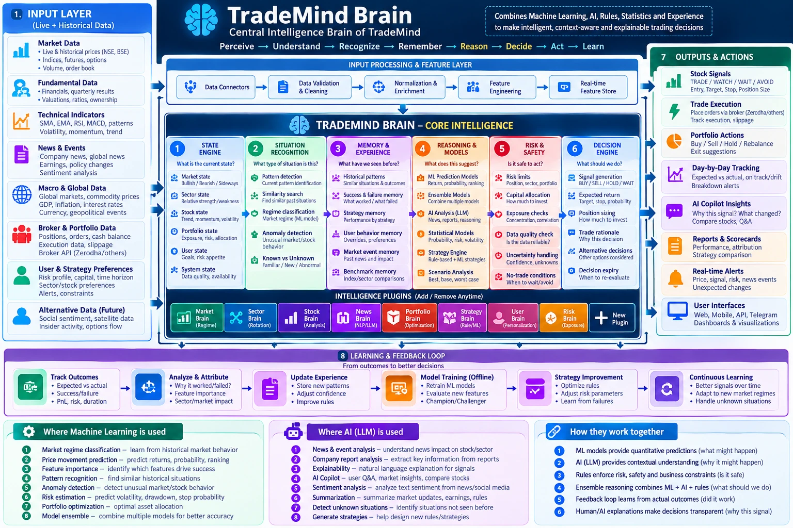
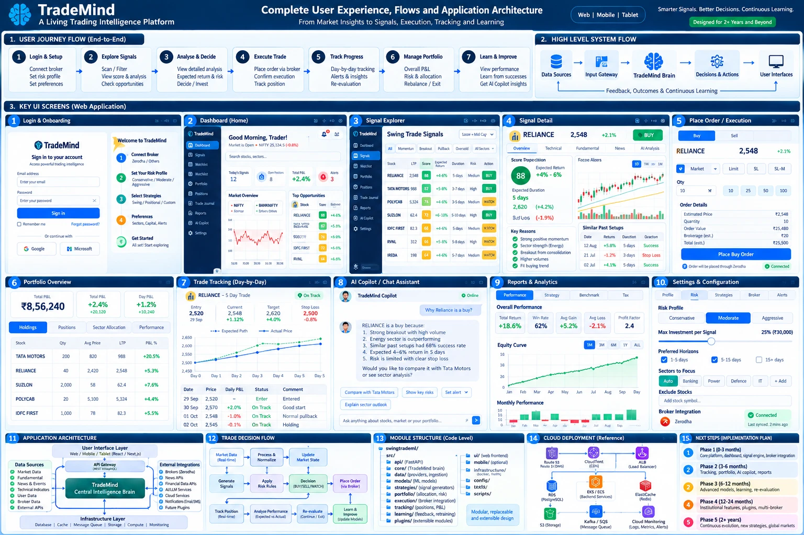

<title>TradeMind Master Blueprint</title>
<link rel="preconnect" href="https://fonts.googleapis.com">
<link rel="preconnect" href="https://fonts.gstatic.com" crossorigin>
<link rel="stylesheet" href="https://fonts.googleapis.com/css2?family=Inter:wght@400;500;600;700&family=JetBrains+Mono:wght@400;600&display=swap">
<style>
/* Layout: one continuous, print-ready document. Cover and contents, then four
   parts of numbered chapters; each chapter starts a new page when printed.
   Diagrams and big tables are drawn from data by the script at the end. */
:root {
  --bg: #f4f6fb; --paper: #ffffff; --surface-2: #eef2f9; --border: #d6deeb;
  --text: #0f1a2e; --dim: #56657f; --accent: #2f6fe4; --pos: #15803d; --neg: #c62828;
  --warn: #b45309; --plan: #7c3aed; --safe: #be185d; --teal: #0f766e; --store: #0f766e;
  --font-body: "Inter", system-ui, -apple-system, "Segoe UI", sans-serif;
  --font-mono: "JetBrains Mono", ui-monospace, Consolas, monospace;
}
@media (prefers-color-scheme: dark) {
  :root:not([data-theme="light"]) {
    --bg: #0b1120; --paper: #131c31; --surface-2: #1b2540; --border: #2a3858;
    --text: #e6edf7; --dim: #8b9bb4; --accent: #4f8cff; --pos: #22c55e; --neg: #ef4444;
    --warn: #f59e0b; --plan: #a78bfa; --safe: #f472b6; --teal: #2dd4bf; --store: #2dd4bf; color-scheme: dark;
  }
}
:root[data-theme="dark"] {
  --bg: #0b1120; --paper: #131c31; --surface-2: #1b2540; --border: #2a3858;
  --text: #e6edf7; --dim: #8b9bb4; --accent: #4f8cff; --pos: #22c55e; --neg: #ef4444;
  --warn: #f59e0b; --plan: #a78bfa; --safe: #f472b6; --teal: #2dd4bf; --store: #2dd4bf; color-scheme: dark;
}
* { box-sizing: border-box; }
body { background: var(--bg); color: var(--text); font-family: var(--font-body); font-size: 14px; line-height: 1.55; -webkit-font-smoothing: antialiased; }
.doc { max-width: 1000px; margin: 0 auto; padding-inline: 16px; padding-block: 24px 64px; display: flex; flex-direction: column; gap: 22px; }
h1, h2, h3 { margin: 0; text-wrap: balance; letter-spacing: -0.01em; }
h1 { font-size: 2.1rem; } h2 { font-size: 1.32rem; } h3 { font-size: 1rem; }
p { margin: 0; max-width: 80ch; }
code, .mono { font-family: var(--font-mono); font-size: 0.84em; }
.muted { color: var(--dim); } .small { font-size: 0.85rem; }
.page { background: var(--paper); border: 1px solid var(--border); border-radius: 12px; padding: 26px; display: flex; flex-direction: column; gap: 14px; min-width: 0; }
.kicker { font: 600 0.78rem var(--font-mono); letter-spacing: 0.1em; text-transform: uppercase; color: var(--accent); }
.partbar { font: 700 0.8rem var(--font-mono); letter-spacing: 0.12em; text-transform: uppercase; padding: 10px 14px; border-radius: 10px; background: color-mix(in srgb, var(--accent) 12%, transparent); color: var(--accent); }
.chapter-head { display: flex; gap: 14px; align-items: baseline; border-bottom: 2px solid var(--accent); padding-bottom: 10px; }
.chapter-head .no { font: 700 1.5rem var(--font-mono); color: var(--accent); }
.meta { display: grid; grid-template-columns: repeat(auto-fit, minmax(170px, 1fr)); gap: 10px; }
.meta div { background: var(--surface-2); border-radius: 8px; padding: 10px 12px; }
.meta b { display: block; font-size: 0.72rem; color: var(--dim); font-weight: 600; letter-spacing: 0.05em; text-transform: uppercase; }
.toc { columns: 2 280px; column-gap: 28px; margin: 0; padding: 0; list-style: none; }
.toc li { break-inside: avoid; padding: 3px 0; border-bottom: 1px dotted var(--border); display: flex; gap: 10px; font-size: 0.9rem; }
.toc li.part { border: 0; font-weight: 700; color: var(--accent); padding-top: 10px; font-size: 0.78rem; letter-spacing: 0.06em; text-transform: uppercase; }
.toc .n { font-family: var(--font-mono); color: var(--accent); min-width: 26px; }
.toc a { color: var(--text); text-decoration: none; }
.legend { display: flex; flex-wrap: wrap; gap: 8px 16px; font-size: 0.82rem; color: var(--dim); align-items: center; }
.dot { display: inline-block; width: 9px; height: 9px; border-radius: 50%; margin-right: 5px; flex: 0 0 auto; }
.d-b { background: var(--pos); } .d-p { background: var(--accent); } .d-n { background: transparent; border: 1.5px solid var(--dim); }
.chg { color: var(--plan); font-weight: 700; font-size: 0.8em; margin-left: 4px; }
.pill { display: inline-flex; align-items: center; border-radius: 999px; font-size: 0.72rem; font-weight: 700; padding: 2px 8px; white-space: nowrap; }
.s-A { color: var(--pos); background: color-mix(in srgb, var(--pos) 13%, transparent); }
.s-B { color: var(--accent); background: color-mix(in srgb, var(--accent) 13%, transparent); }
.s-C { color: var(--warn); background: color-mix(in srgb, var(--warn) 14%, transparent); }
.s-D { color: var(--plan); background: color-mix(in srgb, var(--plan) 14%, transparent); }
.st { display: inline-flex; font-size: 0.74rem; font-weight: 700; border-radius: 999px; padding: 2px 9px; }
.s-g { color: var(--pos); background: color-mix(in srgb, var(--pos) 13%, transparent); }
.s-b { color: var(--accent); background: color-mix(in srgb, var(--accent) 13%, transparent); }
.s-w { color: var(--warn); background: color-mix(in srgb, var(--warn) 14%, transparent); }
.s-r { color: var(--neg); background: color-mix(in srgb, var(--neg) 12%, transparent); }
.s-u { color: var(--plan); background: color-mix(in srgb, var(--plan) 14%, transparent); }
.tbl-wrap { overflow-x: auto; border: 1px solid var(--border); border-radius: 10px; }
table { border-collapse: collapse; width: 100%; font-size: 0.83rem; }
th, td { text-align: left; vertical-align: top; padding: 6px 9px; border-bottom: 1px solid var(--border); }
th { font-size: 0.7rem; letter-spacing: 0.04em; text-transform: uppercase; color: var(--dim); background: var(--surface-2); font-weight: 600; }
tr:last-child td { border-bottom: 0; }
tr.grp td { background: var(--surface-2); font-weight: 700; font-size: 0.8rem; }
td.num, th.num { text-align: right; font-variant-numeric: tabular-nums; }
td code { font-size: 0.78rem; }
.yes { color: var(--pos); font-weight: 700; } .part { color: var(--warn); font-weight: 700; } .nope { color: var(--neg); font-weight: 700; }
.figure { border: 1px solid var(--border); border-radius: 10px; padding: 8px; background: var(--paper); }
.figure img { display: block; width: 100%; height: auto; border-radius: 6px; }
.fig-title { font-weight: 600; font-size: 0.95rem; }
.fig-title span { font-family: var(--font-mono); color: var(--dim); font-weight: 400; font-size: 0.8rem; margin-left: 6px; }
.flow-host { border: 1px solid var(--border); border-radius: 10px; padding: 10px; background: var(--paper); overflow-x: auto; }
.flow-host svg { display: block; width: 100%; max-width: 760px; height: auto; margin: 0 auto; min-width: 520px; }
.two { display: grid; grid-template-columns: repeat(auto-fit, minmax(300px, 1fr)); gap: 14px; align-items: start; }
.note { border-left: 3px solid var(--accent); background: var(--surface-2); padding: 10px 14px; border-radius: 0 8px 8px 0; font-size: 0.86rem; }
.note.warn { border-left-color: var(--warn); } .note.safe { border-left-color: var(--safe); }
ol.clean, ul.clean { margin: 0; padding-left: 20px; display: flex; flex-direction: column; gap: 5px; }
pre.algo { margin: 0; font: 0.78rem/1.55 var(--font-mono); background: var(--surface-2); border-left: 3px solid var(--accent); border-radius: 0 8px 8px 0; padding: 12px 14px; white-space: pre-wrap; }

/* architecture bands */
.arch { display: flex; flex-direction: column; }
.band { border: 1.5px solid var(--border); border-left: 6px solid var(--accent); border-radius: 10px; padding: 9px 12px; background: var(--paper); display: flex; flex-direction: column; gap: 7px; }
.band .bh { display: flex; flex-wrap: wrap; gap: 4px 10px; align-items: baseline; }
.band .bh b { font-size: 0.9rem; } .band .bh .num { font: 700 0.78rem var(--font-mono); color: var(--dim); } .band .bh span { font-size: 0.8rem; color: var(--dim); }
.chips { display: flex; flex-wrap: wrap; gap: 5px; }
.chip { display: inline-flex; align-items: center; font-size: 0.78rem; background: var(--surface-2); border: 1px solid var(--border); border-radius: 7px; padding: 2px 8px; }
.arrow { text-align: center; color: var(--dim); line-height: 1.3; }
.t-src { border-left-color: var(--teal); } .t-gw { border-left-color: #0891b2; } .t-ct { border-left-color: var(--plan); } .t-bus { border-left-color: var(--pos); }
.t-brain { border-left-color: var(--accent); } .t-safe { border-left-color: var(--safe); } .t-dec { border-left-color: var(--warn); } .t-out { border-left-color: var(--pos); } .t-base { border-left-color: var(--dim); }
.steps { display: grid; grid-template-columns: repeat(auto-fit, minmax(100px, 1fr)); gap: 6px; }
.step { background: var(--surface-2); border: 1px solid var(--border); border-radius: 8px; padding: 5px 7px; font-size: 0.76rem; text-align: center; font-weight: 600; }
.step.gate { border-color: var(--safe); color: var(--safe); }
.sub { font-size: 0.7rem; font-weight: 700; letter-spacing: 0.06em; text-transform: uppercase; color: var(--dim); }
.base-grid { display: grid; gap: 8px; grid-template-columns: repeat(auto-fit, minmax(210px, 1fr)); }

/* mock cards */
.mock { border: 1px solid var(--border); border-radius: 10px; overflow: hidden; background: var(--paper); }
.mock-h { display: flex; justify-content: space-between; gap: 8px; padding: 7px 12px; background: var(--surface-2); border-bottom: 1px solid var(--border); }
.mock-h b { font-size: 0.86rem; } .mock-h span { font-size: 0.72rem; color: var(--dim); }
.mock-b { padding: 9px 12px; display: flex; flex-direction: column; gap: 9px; }
.kv { display: grid; grid-template-columns: minmax(0, 1fr) auto; gap: 3px 12px; font-size: 0.83rem; }
.kv > span:nth-child(even) { text-align: right; font-weight: 600; font-variant-numeric: tabular-nums; }
.final { border: 1px solid var(--border); border-radius: 8px; padding: 6px 10px; font-weight: 700; display: flex; justify-content: space-between; gap: 8px; flex-wrap: wrap; }
.btns { display: flex; flex-wrap: wrap; gap: 6px; }
.btn { font-size: 0.76rem; font-weight: 600; border: 1px solid var(--border); border-radius: 7px; padding: 3px 9px; background: var(--surface-2); }
.btn.pri { border-color: var(--accent); color: var(--accent); }
.illus { font-size: 0.73rem; color: var(--dim); font-style: italic; }

/* flowcharts and mind */
.fl .n-proc { fill: var(--paper); stroke: var(--accent); stroke-width: 1.5; }
.fl .n-dec { fill: var(--paper); stroke: var(--warn); stroke-width: 1.6; }
.fl .n-data { fill: var(--surface-2); stroke: var(--store); stroke-width: 1.6; }
.fl .n-term { fill: var(--surface-2); stroke: var(--dim); stroke-width: 1.4; }
.fl .n-plan { stroke: var(--plan); stroke-dasharray: 6 4; }
.fl .n-side { fill: var(--surface-2); stroke: var(--neg); stroke-width: 1.2; stroke-dasharray: 4 3; }
.fl .t { fill: var(--text); font: 600 13px var(--font-body); }
.fl .d { fill: var(--dim); font: 11px var(--font-mono); }
.fl .st2 { fill: var(--text); font: 12px var(--font-body); }
.fl .lab { fill: var(--dim); font: 600 11px var(--font-body); }
.fl .ln { stroke: var(--dim); stroke-width: 1.4; fill: none; }
.fl .hd { fill: var(--dim); }
.mind .brain { fill: color-mix(in srgb, var(--accent) 6%, var(--paper)); stroke: var(--accent); stroke-width: 1.6; stroke-dasharray: 7 5; }
.mind .reg { fill: var(--paper); stroke-width: 1.5; }
.mind .r-sense { stroke: var(--teal); } .mind .r-mem { stroke: var(--store); fill: var(--surface-2); } .mind .r-reason { stroke: var(--accent); }
.mind .r-alarm { stroke: var(--neg); } .mind .r-safe { stroke: var(--safe); stroke-width: 2.2; } .mind .r-dec { stroke: var(--warn); stroke-width: 2; }
.mind .r-learn { stroke: var(--plan); } .mind .r-sleep { stroke: var(--dim); stroke-dasharray: 5 4; fill: var(--surface-2); } .mind .r-conf { stroke: var(--warn); }
.mind .io { fill: var(--surface-2); stroke: var(--border); stroke-width: 1.3; }
.mind .t { fill: var(--text); font: 700 12.5px var(--font-body); }
.mind .s { fill: var(--dim); font: 10.5px var(--font-body); }
.mind .z { fill: var(--dim); font: 700 10.5px var(--font-body); letter-spacing: 0.08em; }
.mind .ln { stroke: var(--dim); stroke-width: 1.3; fill: none; }
.mind .lf { stroke: var(--neg); stroke-width: 1.4; fill: none; stroke-dasharray: 5 3; }
.mind .ll { stroke: var(--plan); stroke-width: 1.4; fill: none; }
.mind .hd { fill: var(--dim); } .mind .hf { fill: var(--neg); } .mind .hl { fill: var(--plan); }

@media (max-width: 560px) { .page { padding: 18px; } h1 { font-size: 1.6rem; } }
@media print {
  :root, :root[data-theme="dark"], :root:not([data-theme="light"]) {
    --bg: #fff; --paper: #fff; --surface-2: #eef2f9; --border: #cfd8e6; --text: #0f1a2e; --dim: #4a5870;
    --accent: #2f6fe4; --pos: #15803d; --neg: #c62828; --warn: #b45309; --plan: #7c3aed; --safe: #be185d; --teal: #0f766e; --store: #0f766e; color-scheme: light;
  }
  @page { size: A4 portrait; margin: 12mm; }
  html { -webkit-print-color-adjust: exact; print-color-adjust: exact; }
  body { font-size: 10.8px; background: #fff; }
  .doc { max-width: none; padding: 0; gap: 0; }
  .page { border: 0; border-radius: 0; padding: 0; break-before: page; }
  .page.cover { break-before: auto; }
  .tbl-wrap, .flow-host { overflow: visible; }
  .flow-host { border: 0; padding: 0; }
  .flow-host svg { min-width: 0; max-width: 100%; max-height: 228mm; }
  .band, tr, .mock, .note, pre.algo { break-inside: avoid; }
  h2, h3, .fig-title { break-after: avoid; }
  .two { grid-template-columns: 1fr 1fr; }
}
</style>

<main class="doc">

<!-- ======================================================= COVER -->
<section class="page cover">
  <span class="kicker">Master blueprint · requirements and design</span>
  <h1>TradeMind Master Blueprint</h1>
  <p style="font-size:1.08rem">One document for the whole product: what TradeMind is, how its brain thinks and remembers, what happens when it's confused or its memory fails, how data flows technically, what exists in SwingTradeML today, every requirement, and the plan to build it. It follows the structure of your “Complete Architecture, Requirements &amp; Product Blueprint” PDF and fills every section with the real code, the agreed requirements and the review's recommendations.</p>
  <div class="meta">
    <div><b>Date</b>29 Sep 2026</div>
    <div><b>Product</b>TradeMind on SwingTradeML</div>
    <div><b>Status</b>Draft for approval</div>
    <div><b>Owner</b>Naresh Gudiganti</div>
  </div>
  <div class="note"><b>How to read.</b> Part A explains the product and business. Part B is the brain: mind diagram, memory, confusion and failure handling, decisions, contracts and safety. Part C is the technical design. Part D lists everything the application has today, every requirement, the implementation plan and the open problems. Part E reviews your two newest pictures, the Central Brain and the Experience and Application architecture, and lists what they add to the requirements. Record disagreements in the problem log (chapter 35) rather than changing contracts silently.</div>
  <div class="legend">
    <span><span class="dot d-b"></span>Built in code</span><span><span class="dot d-p"></span>Partly built</span><span><span class="dot d-n"></span>Planned</span>
    <span><span class="pill s-A">A</span> built</span><span><span class="pill s-B">B</span> extend</span><span><span class="pill s-C">C</span> new</span><span><span class="pill s-D">D</span> future</span>
    <span><span class="chg">✎</span> changed from your picture</span>
  </div>
  <h3>Contents</h3>
  <ol class="toc" id="toc"></ol>
</section>

<!-- ======================================================= PART A -->
<section class="page" data-ch="1" data-title="Executive understanding" data-part="Part A · Understanding and business">
  <div class="partbar">Part A · Understanding and business</div>
  <p>TradeMind is not only a stock scanner, a signal generator, one ML model or a trading bot. It is a <b>central intelligence brain</b> that receives market, portfolio, user, news, macro, historical and system information; builds context; recognises situations; reasons over evidence; applies risk and constitutional safety rules; decides; tracks what actually happened; and learns from outcomes. A signal is only one of its outputs.</p>
  <div class="tbl-wrap"><table>
    <thead><tr><th>Where we are</th><th>Today (29 Sep 2026)</th></tr></thead>
    <tbody>
      <tr><td>What runs</td><td>SwingTradeML: a personal system on one DigitalOcean droplet. Nightly scan at 15:45, 53 features, three cap-tier LightGBM models, 13 risk rules, exits every 60 seconds, paper trading by default behind a two-flag live latch.</td></tr>
      <tr><td>Evidence</td><td>Model AUC 0.556–0.583. Top 5% of picks: +0.22 to +0.28R per trade in a simple test. Full-system replay on ₹10 lakh: −0.1% to −0.4% per 8-month window after costs, while NIFTY made +6%.</td></tr>
      <tr><td>Plans</td><td>Free / Plus / Pro gating exists on branch <code>feature/plans-manager</code> (not merged; switch off by default; no payments).</td></tr>
      <tr><td>Gates before a public product</td><td>1 · a measured edge after costs. 2 · separate user accounts and data. 3 · SEBI Research Analyst registration and licensed data for users.</td></tr>
    </tbody>
  </table></div>
  <p><b>The plan in one line:</b> keep the working engine, wrap it in stable contracts, add intelligence one plug-in at a time behind the safety layer, and measure every step against today's baseline.</p>
</section>

<section class="page" data-ch="2" data-title="Principles" data-part="Part A · Understanding and business">
  <p>The blueprint's ten principles, merged with the safety principles from the review. When two conflict, the lower number wins.</p>
  <div class="tbl-wrap"><table>
    <thead><tr><th>#</th><th>Principle</th><th>In practice</th><th>Today</th></tr></thead>
    <tbody>
      <tr><td>1</td><td><b>Safety rules never change</b> <span class="chg">✎</span></td><td>Stop, risk per trade, caps, drawdown halt are locked for every plug-in, plan and setting</td><td class="yes">Yes: per-strategy risk overrides refused (commit 6a7e76e)</td></tr>
      <tr><td>2</td><td><b>No uncontrolled changes</b></td><td>Models, rules, playbooks change only through tests, shadow runs and owner approval</td><td class="part">Partly: models need activation; approvals inbox planned</td></tr>
      <tr><td>3</td><td><b>Unknown is a valid state</b></td><td>The brain can say WAIT or UNKNOWN instead of forcing a call</td><td class="part">Partly: HOLD with reasons; UNKNOWN planned</td></tr>
      <tr><td>4</td><td><b>No silent failures</b></td><td>Detect → report → recover → learn; stale data lowers quality and can stop a decision</td><td class="part">Partly: feed alerts, heartbeat, deploy verify</td></tr>
      <tr><td>5</td><td><b>Every important decision is reproducible</b></td><td>Decision ledger with inputs, versions and times; replay on demand</td><td class="part">Partly: signals stored with features and reasons</td></tr>
      <tr><td>6</td><td><b>Evidence over a single score</b></td><td>Evidence for and against, probabilities with track record, never promises</td><td class="part">Partly: reasons and calibration report</td></tr>
      <tr><td>7</td><td><b>Intelligence is not one ML model</b></td><td>Rules, setups, several models, memory and context together</td><td class="part">Partly: rules + ML today</td></tr>
      <tr><td>8</td><td><b>Brain independent of infrastructure</b></td><td>Ports and adapters; external systems are replaceable</td><td class="part">Partly: Broker interface already a port</td></tr>
      <tr><td>9</td><td><b>Cache is never the source of truth</b></td><td>PostgreSQL holds truth; Redis only speeds things up</td><td class="yes">Yes: Redis holds only the heartbeat</td></tr>
      <tr><td>10</td><td><b>New capabilities are additive, versioned and reversible</b></td><td>Feature flags, shadow mode, rollbacks; learn from outcomes, not from every user click</td><td class="part">Partly: rollbacks, shadow strategies, plans switch</td></tr>
    </tbody>
  </table></div>
</section>

<section class="page" data-ch="3" data-title="The architecture: your picture and the final design" data-part="Part A · Understanding and business">
  <div class="fig-title">Figure 3.1 · Your latest picture<span>TradeMind Complete Trading Intelligence Platform</span></div>
  <div class="figure"></div>
  <div class="fig-title">Figure 3.2 · Final architecture, with the review's fixes applied<span>items marked ✎ differ from your picture</span></div>
  <div class="arch" id="arch"></div>
</section>

<section class="page" data-ch="4" data-title="Business flows" data-part="Part A · Understanding and business">
  <div class="two">
    <div><div class="fig-title">Figure 4.1 · A user's journey<span>visitor → paying user</span></div><div class="flow-host" data-flow="bizUser"></div></div>
    <div><div class="fig-title">Figure 4.2 · The owner's day<span>operating the product</span></div><div class="flow-host" data-flow="bizOwner"></div></div>
  </div>
  <div class="tbl-wrap"><table>
    <thead><tr><th>Business element</th><th>Decision so far</th></tr></thead>
    <tbody>
      <tr><td>Plans</td><td>Free (Discover), Plus (Decide), Pro (TradeMind); one brain, three views</td></tr>
      <tr><td>Pricing</td><td>About 50% below comparable products; Plus about half of Pro; benchmark seen: Tickertape Pro ₹399 a month, ₹899 for 3 months, ₹2,399.2 a year</td></tr>
      <tr><td>Launch offer</td><td>6 months of Pro free, if the SEBI consultant confirms it</td></tr>
      <tr><td>Billing periods</td><td>1 and 3 months until the RA advance-fee limit is confirmed</td></tr>
      <tr><td>Sign-in</td><td>Password or Google now; phone OTP and Okta at go-live</td></tr>
      <tr><td>Orders</td><td>Users place their own orders at their broker; the bot trades only the owner's book</td></tr>
    </tbody>
  </table></div>
</section>

<section class="page" data-ch="5" data-title="Free, Plus and Pro" data-part="Part A · Understanding and business">
  <div class="tbl-wrap"><table>
    <thead><tr><th>Area</th><th>Free · Discover</th><th>Plus · Decide</th><th>Pro · TradeMind</th></tr></thead>
    <tbody>
      <tr><td>Stock signals</td><td>5 large-cap, state and top reason</td><td>All, trigger, levels, Expected R, amount</td><td>+ setup odds, horizons, model agreement</td></tr>
      <tr><td>Holding actions</td><td>—</td><td>HOLD / MONITOR / REDUCE / EXIT</td><td>+ exit scenarios, opportunity cost</td></tr>
      <tr><td>Market state</td><td>Banner</td><td>+ index and sector trends</td><td>+ closest past episode, shock centre</td></tr>
      <tr><td>Alerts</td><td>End of day, in app</td><td>Real time: push, Telegram</td><td>+ WhatsApp, event shocks</td></tr>
      <tr><td>Day-by-day tracking</td><td>Paper trades</td><td>Your trades</td><td>+ typical range, drift reasons</td></tr>
      <tr><td>Reports</td><td>Verified summary</td><td>Score report card</td><td>+ filter, factor, model scorecards</td></tr>
      <tr><td>Portfolio</td><td>—</td><td>Health score, 1% sizing</td><td>+ correlation, factors, what-if, custom risk</td></tr>
      <tr><td>Models, strategies</td><td>Default safety model</td><td>1 model, 1 strategy</td><td>Any; agreement mode; presets</td></tr>
      <tr><td>AI</td><td>Short brief</td><td>Full brief</td><td>Personal brief, copilot, research lab</td></tr>
      <tr><td>Orders</td><td>Paper trading</td><td>Read-only broker link</td><td>+ order-list export</td></tr>
    </tbody>
  </table></div>
</section>

<section class="page" data-ch="6" data-title="The five user moments" data-part="Part A · Understanding and business">
  <p>Your five moments, rebuilt so every number follows today's engine: stop −4% and target +8% from entry, half booked at +5%, a trailing stop on the rest, 1% risk per trade, and position caps from the capital ladder (25% per position at ₹1 lakh, 10% at ₹10 lakh, interpolated). Probabilities are illustrative. <span class="chg">✎</span></p>
  <div class="two">
    <div class="mock"><div class="mock-h"><b>1 · SIGNAL · 15:45</b><span>Illustrative stock “ABC”</span></div><div class="mock-b">
      <div class="final"><span>ABC · Large cap · Pullback</span><span class="st s-g">TRADE</span></div>
      <div class="kv"><span>Trigger (next session)</span><span>above ₹1,002.50</span><span>Stop · first target · target</span><span>₹963 · ₹1,053 · ₹1,083</span><span>Holding period</span><span>up to 15 trading days</span><span>Reached +5% first (similar signals)</span><span>58% of 120</span><span>Expected R after costs</span><span>+0.3R</span></div>
      <div class="kv"><span>Your capital</span><span>₹1,20,000</span><span>Suggested amount (cap ≈ 24%)</span><span>₹28,500</span><span>Quantity at ₹1,003</span><span>28 shares (₹28,084)</span><span>At risk if the stop hits</span><span>₹1,120 (0.93%)</span></div>
      <div class="btns"><span class="btn pri">Plan this trade</span><span class="btn">Add to watchlist</span><span class="btn">Why this stock?</span></div>
    </div></div>
    <div class="mock"><div class="mock-h"><b>2 · AFTER INVESTING</b><span>Daily</span></div><div class="mock-b">
      <div class="kv"><span>Morning brief</span><span>08:45</span><span>Live P&amp;L and drift status</span><span>all day</span><span>Alerts: stop, target, event, regime, shock</span><span>by plan</span><span>Ask the copilot</span><span>Pro</span><span>What changed today</span><span>16:15</span></div>
      <div class="chips"><span class="st s-g">ON TRACK</span><span class="st s-b">SLIGHTLY OFF</span><span class="st s-w">WARNING</span><span class="st s-r">BREAKDOWN</span></div>
      <div class="btns"><span class="btn">Set alert</span><span class="btn">Tighten stop</span><span class="btn">Book partial profit</span><span class="btn">Exit at my broker</span></div>
      <div class="illus">The app's stop only ever moves up.</div>
    </div></div>
    <div class="mock"><div class="mock-h"><b>3 · DAY-BY-DAY</b><span>Illustrative</span></div><div class="mock-b">
      <div class="tbl-wrap"><table><thead><tr><th>Day</th><th class="num">Price</th><th class="num">P&amp;L</th><th class="num">Typical range</th><th>Status</th></tr></thead><tbody>
        <tr><td>0</td><td class="num">₹1,003</td><td class="num">0.0%</td><td class="num">—</td><td>Entered</td></tr>
        <tr><td>1</td><td class="num">₹1,015</td><td class="num">+1.2%</td><td class="num">+0.2 to +1.8%</td><td class="yes">On track</td></tr>
        <tr><td>2</td><td class="num">₹1,009</td><td class="num">+0.6%</td><td class="num">+0.5 to +2.8%</td><td class="part">Slightly off</td></tr>
        <tr><td>3</td><td class="num">₹1,030</td><td class="num">+2.7%</td><td class="num">+0.9 to +3.6%</td><td class="yes">On track</td></tr>
      </tbody></table></div>
      <div class="illus">Typical range = middle half of similar past trades on that day; shown only with 20+ similar trades.</div>
    </div></div>
    <div class="mock"><div class="mock-h"><b>4 · BREAKDOWN · DAY 4</b><span>Illustrative</span></div><div class="mock-b">
      <div class="final"><span>ABC ₹975 (−2.8%) · stop ₹963 not hit</span><span class="st s-w">REDUCE</span></div>
      <div class="kv"><span>Sector weak; NIFTY −1.8%; selling volume spike</span><span>reasons</span><span>Similar situations that later hit the stop</span><span>64% of 45</span></div>
      <div class="btns"><span class="btn pri">Exit now (−2.8%)</span><span class="btn">Tighten stop to ₹968</span><span class="btn">Keep stop ₹963</span></div>
      <div class="illus">At ₹963 the stop exits automatically: “Stop hit, exited at ₹962”. A stop is never loosened.</div>
    </div></div>
    <div class="mock"><div class="mock-h"><b>5 · GOOD PROFIT · DAY 6</b><span>Illustrative</span></div><div class="mock-b">
      <div class="final"><span>ABC ₹1,053 (+5%)</span><span class="st s-g">HOLD rest</span></div>
      <div class="kv"><span>Half booked automatically at +5%</span><span>14 of 28 shares</span><span>Trailing stop on the other 14</span><span>moves up only</span><span>Went on from +5% to +8% (similar)</span><span>47% of 88</span></div>
      <div class="btns"><span class="btn pri">Hold with trailing stop</span><span class="btn">Exit the rest</span><span class="btn">Exit scenarios</span></div>
    </div></div>
  </div>
</section>

<section class="page" data-ch="7" data-title="User problem → architecture" data-part="Part A · Understanding and business">
  <div class="tbl-wrap"><table>
    <thead><tr><th>User problem</th><th>Brain parts that answer it</th><th>Requirement items</th></tr></thead>
    <tbody>
      <tr><td>1 · Signal arrives late, cash is available</td><td>Capital deployment, opportunity cost, trigger entry</td><td>F06, F14, F15, F40, A2</td></tr>
      <tr><td>2 · What do I do after investing?</td><td>Position tracker, monitoring, action centre</td><td>F12, F21, F52, P5</td></tr>
      <tr><td>3 · Expected vs actual, day by day</td><td>Expectation engine and drift</td><td>F50, F05</td></tr>
      <tr><td>4 · The thesis breaks</td><td>Re-evaluation, safety gate, holding call</td><td>F11, F12, F13, F25</td></tr>
      <tr><td>5 · Profit is already good</td><td>Exit intelligence, opportunity cost</td><td>A6, F13, F51, F14</td></tr>
      <tr><td>6 · Bearish or unknown market, signals failing</td><td>Situation recognition, experience memory, defensive mode</td><td>F35, F36, F39, C8</td></tr>
      <tr><td>7 · System or infrastructure failure</td><td>Health engine, incident memory, safe degradation</td><td>F24, C6, C9, P7</td></tr>
    </tbody>
  </table></div>
</section>

<!-- ======================================================= PART B -->
<section class="page" data-ch="8" data-title="The TradeMind mind" data-part="Part B · The TradeMind mind">
  <div class="partbar">Part B · The TradeMind mind</div>
  <p>The brain drawn as a mind: what it senses, how it remembers, where it reasons, what stops it from acting when it's confused or afraid, how its conscience (the constitution) has the final word, and how it learns overnight. Each region is a real part of the design, named in the table below.</p>
  <div class="flow-host">
    <svg class="mind" style="max-width:100%;min-width:640px" viewBox="0 0 1000 668" role="img" aria-label="TradeMind mind architecture: senses on the left feed perception; working memory, alarm and vital signs; recognition, long-term memory and sleep in the middle; reasoning, conflict monitor, conscience, decision and learning on the right; actions and outcomes outside the brain; learning feeds memory back">
    <defs><marker id="mh" viewBox="0 0 10 10" refX="8" refY="5" markerWidth="7" markerHeight="7" orient="auto-start-reverse"><path class="hd" d="M0,0 L10,5 L0,10 z"/></marker><marker id="mf" viewBox="0 0 10 10" refX="8" refY="5" markerWidth="7" markerHeight="7" orient="auto-start-reverse"><path class="hf" d="M0,0 L10,5 L0,10 z"/></marker><marker id="ml" viewBox="0 0 10 10" refX="8" refY="5" markerWidth="7" markerHeight="7" orient="auto-start-reverse"><path class="hl" d="M0,0 L10,5 L0,10 z"/></marker></defs>
    <ellipse class="brain" cx="405" cy="318" rx="205" ry="305"/><ellipse class="brain" cx="595" cy="318" rx="205" ry="305"/>
    <text class="z" x="500" y="42" text-anchor="middle">TRADEMIND MIND</text>
    <text class="z" x="12" y="60">SENSES</text><text class="z" x="814" y="60">ACTIONS</text>
    <rect class="io" x="8" y="70" width="184" height="58" rx="8"/><text class="t" x="18" y="91">Eyes</text><text class="s" x="18" y="109">prices, indices, VIX, volume</text>
    <rect class="io" x="8" y="140" width="184" height="58" rx="8"/><text class="t" x="18" y="161">Ears</text><text class="s" x="18" y="179">news, filings, results, events</text>
    <rect class="io" x="8" y="210" width="184" height="58" rx="8"/><text class="t" x="18" y="231">Touch</text><text class="s" x="18" y="249">broker, positions, fills, cash</text>
    <rect class="io" x="8" y="280" width="184" height="58" rx="8"/><text class="t" x="18" y="301">Self</text><text class="s" x="18" y="319">user profile, capital, goals</text>
    <rect class="io" x="8" y="350" width="184" height="58" rx="8"/><text class="t" x="18" y="371">Inner sense</text><text class="s" x="18" y="389">system health, data freshness</text>
    <rect class="reg r-sense" x="222" y="70" width="170" height="70" rx="9"/><text class="t" x="232" y="91">Perception</text><text class="s" x="232" y="109">clean, validate,</text><text class="s" x="232" y="124">time-stamp, score quality</text>
    <rect class="reg r-mem" x="222" y="158" width="170" height="90" rx="9"/><text class="t" x="232" y="179">Working memory</text><text class="s" x="232" y="197">state now: market,</text><text class="s" x="232" y="212">sector, stock, portfolio,</text><text class="s" x="232" y="227">user, system</text>
    <rect class="reg r-alarm" x="222" y="266" width="170" height="80" rx="9"/><text class="t" x="232" y="287">Alarm (fear)</text><text class="s" x="232" y="305">shock detector →</text><text class="s" x="232" y="320">CAUTION, DEFENSIVE, SHOCK</text>
    <rect class="reg r-sense" x="222" y="364" width="170" height="72" rx="9"/><text class="t" x="232" y="385">Vital signs</text><text class="s" x="232" y="403">heartbeat, feeds, DB,</text><text class="s" x="232" y="418">models, broker link</text>
    <rect class="reg r-reason" x="410" y="70" width="175" height="82" rx="9"/><text class="t" x="420" y="91">Recognition</text><text class="s" x="420" y="109">“seen this before?”</text><text class="s" x="420" y="124">familiar · unfamiliar ·</text><text class="s" x="420" y="139">abnormal</text>
    <rect class="reg r-mem" x="410" y="170" width="175" height="200" rx="9"/><text class="t" x="420" y="191">Long-term memory</text><text class="s" x="420" y="209">market experience</text><text class="s" x="420" y="224">strategy experience</text><text class="s" x="420" y="239">failures</text><text class="s" x="420" y="254">unknown situations</text><text class="s" x="420" y="269">decision ledger</text><text class="s" x="420" y="284">outcomes</text><text class="s" x="420" y="299">user preferences</text><text class="s" x="420" y="314">system incidents</text>
    <rect class="reg r-sleep" x="410" y="396" width="175" height="80" rx="9"/><text class="t" x="420" y="417">Sleep (evening jobs)</text><text class="s" x="420" y="435">consolidate: scoring,</text><text class="s" x="420" y="450">scorecards, tidy-up,</text><text class="s" x="420" y="465">backups</text>
    <rect class="reg r-reason" x="605" y="70" width="175" height="82" rx="9"/><text class="t" x="615" y="91">Reasoning</text><text class="s" x="615" y="109">rules, setup models,</text><text class="s" x="615" y="124">stats, meta-model,</text><text class="s" x="615" y="139">Expected R</text>
    <rect class="reg r-conf" x="605" y="170" width="175" height="82" rx="9"/><text class="t" x="615" y="191">Conflict monitor</text><text class="s" x="615" y="209">models disagree or</text><text class="s" x="615" y="224">evidence conflicts →</text><text class="s" x="615" y="239">WAIT / UNKNOWN</text>
    <rect class="reg r-safe" x="605" y="270" width="175" height="100" rx="9"/><text class="t" x="615" y="291">Conscience</text><text class="s" x="615" y="309">constitution: locked</text><text class="s" x="615" y="324">limits, compliance,</text><text class="s" x="615" y="339">human override;</text><text class="s" x="615" y="354">has the final word</text>
    <rect class="reg r-dec" x="605" y="396" width="175" height="66" rx="9"/><text class="t" x="615" y="417">Decision</text><text class="s" x="615" y="435">one state + evidence +</text><text class="s" x="615" y="450">versions + expiry</text>
    <rect class="reg r-learn" x="605" y="480" width="175" height="82" rx="9"/><text class="t" x="615" y="501">Learning</text><text class="s" x="615" y="519">expected vs actual →</text><text class="s" x="615" y="534">lessons, proposals;</text><text class="s" x="615" y="549">owner approves</text>
    <rect class="io" x="812" y="70" width="182" height="70" rx="8"/><text class="t" x="822" y="91">Signals</text><text class="s" x="822" y="109">TRADE · WATCH · WAIT ·</text><text class="s" x="822" y="124">UNKNOWN · AVOID</text>
    <rect class="io" x="812" y="148" width="182" height="70" rx="8"/><text class="t" x="822" y="169">Holding actions</text><text class="s" x="822" y="187">HOLD · MONITOR ·</text><text class="s" x="822" y="202">REDUCE · EXIT</text>
    <rect class="io" x="812" y="226" width="182" height="70" rx="8"/><text class="t" x="822" y="247">Market banner</text><text class="s" x="822" y="265">NORMAL · CAUTION ·</text><text class="s" x="822" y="280">DEFENSIVE · SHOCK</text>
    <rect class="io" x="812" y="304" width="182" height="70" rx="8"/><text class="t" x="822" y="325">Voice</text><text class="s" x="822" y="343">alerts, brief,</text><text class="s" x="822" y="358">copilot answers</text>
    <rect class="io" x="812" y="382" width="182" height="70" rx="8"/><text class="t" x="822" y="403">Hands (owner only)</text><text class="s" x="822" y="421">paper or live orders</text><text class="s" x="822" y="436">via the Broker port</text>
    <rect class="io" x="812" y="490" width="182" height="72" rx="8"/><text class="t" x="822" y="511">Outcomes</text><text class="s" x="822" y="529">what really happened:</text><text class="s" x="822" y="544">fills, prices, stops</text>
    <line class="ln" x1="192" y1="99" x2="219" y2="86" marker-end="url(#mh)"/>
    <line class="ln" x1="192" y1="169" x2="219" y2="98" marker-end="url(#mh)"/>
    <line class="ln" x1="192" y1="239" x2="219" y2="110" marker-end="url(#mh)"/>
    <line class="ln" x1="192" y1="309" x2="219" y2="122" marker-end="url(#mh)"/>
    <line class="ln" x1="192" y1="379" x2="219" y2="400" marker-end="url(#mh)"/>
    <line class="ln" x1="307" y1="140" x2="307" y2="155" marker-end="url(#mh)"/>
    <line class="ln" x1="392" y1="190" x2="407" y2="120" marker-end="url(#mh)"/>
    <line class="ln" x1="497" y1="152" x2="497" y2="167" marker-end="url(#mh)"/>
    <line class="ln" x1="585" y1="111" x2="602" y2="111" marker-end="url(#mh)"/>
    <line class="ln" x1="585" y1="210" x2="602" y2="140" marker-end="url(#mh)"/>
    <line class="ln" x1="692" y1="152" x2="692" y2="167" marker-end="url(#mh)"/>
    <line class="ln" x1="692" y1="252" x2="692" y2="267" marker-end="url(#mh)"/>
    <line class="ln" x1="692" y1="370" x2="692" y2="393" marker-end="url(#mh)"/>
    <polyline class="lf" points="222,120 210,120 210,300 219,300" marker-end="url(#mf)"/>
    <polyline class="lf" points="392,320 400,320 400,383 640,383 640,373" marker-end="url(#mf)"/>
    <line class="ln" x1="780" y1="412" x2="809" y2="105" marker-end="url(#mh)"/>
    <line class="ln" x1="780" y1="420" x2="809" y2="183" marker-end="url(#mh)"/>
    <line class="ln" x1="780" y1="428" x2="809" y2="261" marker-end="url(#mh)"/>
    <line class="ln" x1="780" y1="436" x2="809" y2="339" marker-end="url(#mh)"/>
    <line class="ln" x1="780" y1="444" x2="809" y2="417" marker-end="url(#mh)"/>
    <line class="ln" x1="903" y1="452" x2="903" y2="487" marker-end="url(#mh)"/>
    <line class="ll" x1="812" y1="522" x2="783" y2="522" marker-end="url(#ml)"/>
    <polyline class="ll" points="605,530 596,530 596,300 588,300" marker-end="url(#ml)"/>
    <line class="ll" x1="497" y1="396" x2="497" y2="373" marker-end="url(#ml)"/>
    <text class="s" x="500" y="652" text-anchor="middle">Grey: thinking path · red dashed: fast alarm path straight to the conscience · purple: learning back into memory</text>
    </svg>
  </div>
  <div class="tbl-wrap"><table>
    <thead><tr><th>Region</th><th>Like in a person</th><th>In TradeMind</th><th>In code today</th></tr></thead>
    <tbody>
      <tr><td>Senses</td><td>Eyes, ears, touch</td><td>Input gateway and data contracts</td><td>Kite quotes and candles, NSE feeds, holdings sync</td></tr>
      <tr><td>Perception</td><td>Making sense of what you see</td><td>Validation, normalisation, time-stamps, data-quality score</td><td>Feed checks, spike guard, 53 level-invariant features</td></tr>
      <tr><td>Working memory</td><td>What's in your head right now</td><td>State engine</td><td>Regime (deployable.py), positions, cash</td></tr>
      <tr><td>Recognition</td><td>“I've been here before”</td><td>Situation recognition</td><td>Regime only; market memory planned (F35)</td></tr>
      <tr><td>Long-term memory</td><td>Experience</td><td>Eight memory stores (chapter 10)</td><td>Signals, trades, predictions; others planned</td></tr>
      <tr><td>Alarm</td><td>Fear response</td><td>Shock detector → market state</td><td>Regime table, drawdown halt; shock detector planned</td></tr>
      <tr><td>Vital signs</td><td>Heartbeat, breathing</td><td>Health engine</td><td>Heartbeat, check_kite_login, deploy verification</td></tr>
      <tr><td>Reasoning</td><td>Thinking it through</td><td>Rules, setup models, meta-model, Expected R</td><td>ml_swing thresholds and filters</td></tr>
      <tr><td>Conflict monitor</td><td>“Something doesn't add up”</td><td>Uncertainty and agreement → WAIT / UNKNOWN</td><td>Planned (F25)</td></tr>
      <tr><td>Conscience</td><td>Values you won't break</td><td>Constitution and safety layer</td><td>risk.check_entry, locked risk fields, kill switch, live latch</td></tr>
      <tr><td>Decision</td><td>Choosing</td><td>Decision engine and contract</td><td>SignalDecision → Signal rows</td></tr>
      <tr><td>Hands and voice</td><td>Acting and speaking</td><td>Broker adapter (owner only), alerts, briefs, copilot</td><td>Paper/Kite brokers, Telegram</td></tr>
      <tr><td>Learning</td><td>Reflecting on results</td><td>Outcome attribution, lessons, proposals with approval</td><td>evaluate_signals, calibration</td></tr>
      <tr><td>Sleep</td><td>Memory consolidation at night</td><td>Evening jobs: scoring, scorecards, backups</td><td>16:15–16:17 scoring jobs; backups on deploy</td></tr>
    </tbody>
  </table></div>
</section>

<section class="page" data-ch="9" data-title="Brain modules" data-part="Part B · The TradeMind mind">
  <div class="tbl-wrap"><table>
    <thead><tr><th>Module</th><th>Takes in</th><th>Gives out</th><th>Today</th><th>Items</th></tr></thead>
    <tbody>
      <tr><td><b>1 Perception</b></td><td>Raw inputs</td><td>Clean, dated, quality-scored data</td><td>Feeds, features, spike guard</td><td>F24, C3</td></tr>
      <tr><td><b>2 State engine</b></td><td>Perceived data</td><td>Market, sector, stock, portfolio, user, system state</td><td>Regime, positions</td><td>F01, F02, F46, C8</td></tr>
      <tr><td><b>3 Situation recognition</b></td><td>State + memory</td><td>Familiar / unfamiliar / abnormal; closest past episode; regime transition</td><td>Regime only</td><td>F26, F35</td></tr>
      <tr><td><b>4 Memory and experience</b></td><td>Decisions, outcomes, incidents</td><td>Relevant experience for this situation</td><td>Signals, trades, predictions</td><td>F18, F31, F35, C13</td></tr>
      <tr><td><b>5 Reasoning</b></td><td>Features, setups, context, memory</td><td>Probabilities, Expected R, evidence for and against</td><td>One classifier per cap tier + filters</td><td>F04–F07, F22</td></tr>
      <tr><td><b>6 Risk and safety</b></td><td>Candidate decision + portfolio + policy</td><td>Allowed or refused, size, reason</td><td>13 rules, ladder, deployable %</td><td>A2, C7</td></tr>
      <tr><td><b>7 Decision engine</b></td><td>Everything above</td><td>One state per stock + contract</td><td>BUY / HOLD / EXIT</td><td>F10, F25, C2</td></tr>
      <tr><td><b>8 Learning engine</b></td><td>Outcomes vs expectations</td><td>Scorecards, lessons, proposals</td><td>Scoring, calibration</td><td>F23, F31, F37–F39</td></tr>
    </tbody>
  </table></div>
  <div class="fig-title">Figure 9.1 · How the modules run each evening<span>trading core · 15:45</span></div>
  <div class="flow-host" data-flow="brainRun"></div>
</section>

<section class="page" data-ch="10" data-title="Memory architecture" data-part="Part B · The TradeMind mind">
  <p>Memory is split by <b>meaning</b>, not by storage product. PostgreSQL holds the truth; Redis only speeds things up; object storage keeps large raw files; similarity search can later use pgvector inside PostgreSQL.</p>
  <div class="tbl-wrap"><table>
    <thead><tr><th>Memory</th><th>Holds</th><th>Written by</th><th>Read by</th><th>Stored in</th><th>Today</th></tr></thead>
    <tbody>
      <tr><td>Market experience</td><td>Past episodes: corrections, bear phases, shocks; how they unfolded</td><td>Market memory job</td><td>Recognition, bear mode</td><td><code>market_episodes</code>, <code>episode_replays</code></td><td class="nope">Planned</td></tr>
      <tr><td>Strategy experience</td><td>Results by strategy, setup and regime</td><td>Scorecards</td><td>Strategy brain, meta-model</td><td><code>score_band_stats</code>, scorecard tables</td><td class="part">Partly</td></tr>
      <tr><td>Failures</td><td>Why each loss happened</td><td>Failure investigator</td><td>Lessons, DNA</td><td><code>trade_journal.failure_label</code></td><td class="nope">Planned</td></tr>
      <tr><td>Unknown situations</td><td>Times the brain said UNKNOWN and what followed</td><td>Decision engine</td><td>Recognition</td><td><code>decision_records</code> + outcomes</td><td class="nope">Planned</td></tr>
      <tr><td>Decision ledger</td><td>Every decision with inputs, versions, times</td><td>Decision engine</td><td>Replay, copilot, audit</td><td><code>signals</code> today → <code>decision_records</code></td><td class="part">Partly</td></tr>
      <tr><td>Outcomes</td><td>What happened after each decision</td><td>Evening scoring</td><td>Learning</td><td><code>signals.outcome</code>, <code>trades</code>, <code>predictions</code></td><td class="yes">Built</td></tr>
      <tr><td>User preferences</td><td>Profile, choices, taken and skipped signals</td><td>User actions</td><td>Ranking, sizing</td><td><code>users</code> (+ plan), journal</td><td class="part">Partly</td></tr>
      <tr><td>System incidents</td><td>Failures, cause, fix, prevention</td><td>Health engine</td><td>Operations, deploys</td><td><code>incidents</code> (new)</td><td class="nope">Planned</td></tr>
    </tbody>
  </table></div>
  <h3>Time truth: five timestamps on every piece of data</h3>
  <div class="tbl-wrap"><table>
    <thead><tr><th>Time</th><th>Meaning</th><th>Why</th></tr></thead>
    <tbody>
      <tr><td>Event time</td><td>When it happened in the market</td><td>The fact itself</td></tr>
      <tr><td>Received time</td><td>When we fetched it</td><td>Feeds are already stored dated on fetch</td></tr>
      <tr><td>Processed time</td><td>When we cleaned and stored it</td><td>Debugging lag</td></tr>
      <tr><td>Available-to-model time</td><td>From when a model may use it</td><td>Stops look-ahead bias in backtests</td></tr>
      <tr><td>Decision time</td><td>When the brain used it</td><td>Replay exactly what was known</td></tr>
    </tbody>
  </table></div>
</section>

<section class="page" data-ch="11" data-title="When the mind struggles: confusion, fear, memory crash" data-part="Part B · The TradeMind mind">
  <p>A good trader knows when they're confused, afraid or not thinking clearly, and doesn't trade then. TradeMind has the same instincts built in. Each condition below has a detection rule, a safe behaviour, a recovery path and something it remembers.</p>
  <div class="tbl-wrap"><table>
    <thead><tr><th>Condition</th><th>Like a person who…</th><th>How it's detected</th><th>What TradeMind does</th><th>Recovery and memory</th></tr></thead>
    <tbody>
      <tr><td><b>Confusion</b></td><td>hears contradicting advice</td><td>Models disagree (below 4 of 6); evidence for and against both strong</td><td>WAIT with the reason; no size given</td><td>Re-checked next scan; kept in the decision ledger</td></tr>
      <tr><td><b>Unfamiliar situation</b></td><td>has never been here before</td><td>No close match in market memory</td><td>UNKNOWN; smaller limits; defensive if market-wide</td><td>Stored in unknown-situation memory with its outcome</td></tr>
      <tr><td><b>Fear / shock</b></td><td>sees a sudden crash</td><td>NIFTY sharp fall, VIX spike, breadth collapse, shock on high volume</td><td>SHOCK state: no new trades; holdings reviewed; stops unchanged</td><td>Back to normal after 2 calm days; episode recorded</td></tr>
      <tr><td><b>Overconfidence</b></td><td>believes their own hype</td><td>Score band's real hit rate 10+ points below stated</td><td>Band marked “under review”; stops showing as TRADE</td><td>Recalibration proposed; owner approves</td></tr>
      <tr><td><b>Blurred senses</b></td><td>can't see clearly</td><td>Stale or missing feed; failed validation</td><td>Data-quality score drops; affected decisions become WAIT</td><td>Feed alert; retry; incident logged</td></tr>
      <tr><td><b>Short-term memory loss</b></td><td>forgets what they were doing</td><td>Redis cache empty or down</td><td>Reload from PostgreSQL; no decision from cache alone</td><td>Automatic; nothing lost</td></tr>
      <tr><td><b>Long-term memory loss</b></td><td>loses their memory</td><td>Database unreachable</td><td>NO NEW TRADES; exits rely on broker-held stops (GTT, planned)</td><td>Restore from backup (database dump on every deploy); incident logged</td></tr>
      <tr><td><b>Corrupted memory</b></td><td>remembers something wrong</td><td>Integrity checks, spike guard, restated data, look-ahead tests</td><td>Quarantine the bad rows; mark decisions using them</td><td>Restore and replay affected decisions</td></tr>
      <tr><td><b>Amnesia after a change</b></td><td>wakes up without skills</td><td>Model file missing (backup job alerts), wrong model version</td><td>No model = no signals (HOLD); never guess a model</td><td>Restore artifact; registry rollback in one call</td></tr>
      <tr><td><b>Split brain</b></td><td>thinks they own something they sold</td><td>App's positions ≠ broker's holdings</td><td>Broker is the truth for holdings; alerts stop for sold stocks</td><td>holdings_sync and reconcile_orders fix it; incident logged</td></tr>
      <tr><td><b>Exhaustion</b></td><td>is overloaded</td><td>Scan too slow; job queue backlog</td><td>Exits first, scans second, Pro research last</td><td>Scale workers; capacity note in incidents</td></tr>
      <tr><td><b>Coma</b></td><td>stops responding</td><td>Worker heartbeat missing</td><td>Alert the owner; deploy verification fails</td><td>Restart; release rollback to previous images</td></tr>
      <tr><td><b>Imagining things</b></td><td>makes up facts</td><td>Copilot answer without a citation</td><td>Answer withheld; says what it doesn't know</td><td>Evaluation set updated</td></tr>
    </tbody>
  </table></div>
  <div class="fig-title">Figure 11.1 · Memory-crash recovery path<span>cache → database → backup</span></div>
  <div class="flow-host" data-flow="memCrash"></div>
</section>

<section class="page" data-ch="12" data-title="Decision vocabulary and market states" data-part="Part B · The TradeMind mind">
  <p>Your picture and the blueprint used different words (BUY / SELL / HOLD / WAIT / REDUCE / EXIT / NO-TRADE / UNKNOWN; TRADE / WATCH / WAIT / AVOID). The final design uses three small sets, one per situation. UNKNOWN is its own state, as the blueprint asks. <span class="chg">✎</span></p>
  <div class="tbl-wrap"><table>
    <thead><tr><th>Situation</th><th>State</th><th>Meaning</th><th>Blueprint word</th></tr></thead>
    <tbody>
      <tr class="grp"><td colspan="4">A stock you don't own</td></tr>
      <tr><td></td><td><span class="st s-g">TRADE</span></td><td>All gates pass, positive Expected R, trigger set for next session</td><td>BUY</td></tr>
      <tr><td></td><td><span class="st s-b">WATCH</span></td><td>Good stock, entry not right yet</td><td>—</td></tr>
      <tr><td></td><td><span class="st s-w">WAIT</span></td><td>Models disagree, data poor, event due, regime changing</td><td>WAIT</td></tr>
      <tr><td></td><td><span class="st s-u">UNKNOWN</span></td><td>Situation outside experience; not enough evidence</td><td>UNKNOWN / INSUFFICIENT EVIDENCE</td></tr>
      <tr><td></td><td><span class="st s-r">AVOID</span></td><td>Landmine, negative Expected R or poor risk</td><td>NO-TRADE (one stock)</td></tr>
      <tr class="grp"><td colspan="4">A stock you hold</td></tr>
      <tr><td></td><td><span class="st s-g">HOLD</span></td><td>Reason still holds</td><td>HOLD</td></tr>
      <tr><td></td><td><span class="st s-b">MONITOR</span></td><td>Reason weakening</td><td>—</td></tr>
      <tr><td></td><td><span class="st s-w">REDUCE</span></td><td>Book part or tighten the stop</td><td>REDUCE</td></tr>
      <tr><td></td><td><span class="st s-r">EXIT</span></td><td>Leave the position</td><td>SELL, EXIT</td></tr>
      <tr class="grp"><td colspan="4">The whole market (maps today's six regimes)</td></tr>
      <tr><td></td><td><span class="st s-g">NORMAL</span></td><td>Regime normal, strong or very strong</td><td>NORMAL</td></tr>
      <tr><td></td><td><span class="st s-b">CAUTION</span></td><td>Regime weak, or unknown (too little index history)</td><td>CAUTION</td></tr>
      <tr><td></td><td><span class="st s-w">DEFENSIVE</span></td><td>Regime stressed: deploy ≤ 10%, large caps, tested setups only</td><td>DEFENSIVE</td></tr>
      <tr><td></td><td><span class="st s-r">SHOCK</span></td><td>Sudden crash signs: no new trades; exits continue</td><td>SHOCK / EXTREME-SHOCK, NO-TRADE</td></tr>
    </tbody>
  </table></div>
  <p class="small muted">“SELL” is dropped: trading is delivery (CNC) only, with no short selling.</p>
</section>

<section class="page" data-ch="13" data-title="Decision contract and stable contracts" data-part="Part B · The TradeMind mind">
  <p>Every decision uses one versioned contract. It separates the brain from screens, brokers and infrastructure. Today's <code>SignalDecision</code> is the seed.</p>
  <div class="tbl-wrap"><table>
    <thead><tr><th>Field</th><th>Meaning</th><th>Today</th></tr></thead>
    <tbody id="dcRows"></tbody>
  </table></div>
  <h3>The nine stable contracts</h3>
  <div class="tbl-wrap"><table>
    <thead><tr><th>Contract</th><th>Carries</th><th>Exists today as</th><th>Status</th></tr></thead>
    <tbody>
      <tr><td>Decision</td><td>State, confidence, expectation, size, evidence, versions, expiry</td><td><code>SignalDecision</code> + <code>signals</code> row</td><td class="part">Partly</td></tr>
      <tr><td>Evidence</td><td>Reasons for and against with sources</td><td><code>Signal.features</code>, reason text</td><td class="part">Partly</td></tr>
      <tr><td>MarketContext</td><td>Market state, regime, trends, shocks</td><td><code>deployable.current_deployable()</code>, <code>market_context</code></td><td class="part">Partly</td></tr>
      <tr><td>PortfolioContext</td><td>Holdings, cash, exposures, drawdown</td><td><code>risk.open_holdings()</code>, <code>portfolio_value_and_cash()</code></td><td class="part">Partly</td></tr>
      <tr><td>RiskContext</td><td>Limits, budget, allowed tiers</td><td><code>limits_for()</code>, <code>RiskDecision</code></td><td class="part">Partly</td></tr>
      <tr><td>OrderIntent</td><td>What to buy or sell, how, limits</td><td><code>OrderRequest</code> (brokers/base.py)</td><td class="yes">Built</td></tr>
      <tr><td>Outcome</td><td>What happened after a decision</td><td><code>Signal.outcome</code>, <code>Trade</code>, <code>OrderResult</code></td><td class="part">Partly</td></tr>
      <tr><td>Experience</td><td>A remembered situation and its lesson</td><td>—</td><td class="nope">New</td></tr>
      <tr><td>SystemHealth</td><td>Freshness, services, models, broker link</td><td>Heartbeat, <code>system_state</code></td><td class="part">Partly</td></tr>
    </tbody>
  </table></div>
</section>

<section class="page" data-ch="14" data-title="Constitution and safety layer" data-part="Part B · The TradeMind mind">
  <p>Non-negotiable and versioned. It surrounds decision-making: every decision passes it last, and it decides when the system must refuse to act confidently.</p>
  <div class="tbl-wrap"><table>
    <thead><tr><th>Rule</th><th>Value today</th><th>Where in code</th><th>Status</th></tr></thead>
    <tbody>
      <tr><td>Risk per trade</td><td>1% of account</td><td><code>RISK_PER_TRADE_PCT</code>, <code>risk.calculate_quantity</code></td><td class="yes">Locked</td></tr>
      <tr><td>Stop and target</td><td>−4% and +8% from entry; half at +5%</td><td><code>ML_STOP_RETURN_PCT</code>, <code>ML_TARGET_RETURN_PCT</code>, <code>ML_FIRST_TARGET_PCT</code></td><td class="yes">Locked</td></tr>
      <tr><td>Drawdown halt</td><td>No new entries at 15%</td><td><code>MAX_PORTFOLIO_DRAWDOWN_PCT</code>, <code>check_entry</code></td><td class="yes">Locked</td></tr>
      <tr><td>Position and sector caps</td><td>Capital ladder ₹10K → ₹1Cr</td><td><code>services/limits.py</code></td><td class="yes">Locked</td></tr>
      <tr><td>Time stop</td><td>30 calendar days</td><td><code>exit_policy.py</code></td><td class="yes">Locked</td></tr>
      <tr><td>Live trading latch</td><td>Two flags, checked twice</td><td><code>brokers/__init__.get_broker</code>, <code>KiteBroker.place_order</code></td><td class="yes">Built</td></tr>
      <tr><td>Emergency stop and human override</td><td>Kill switch, exits switch</td><td><code>system_state</code>, Safety page</td><td class="yes">Built</td></tr>
      <tr><td>No per-strategy risk overrides</td><td>Refused</td><td>commit 6a7e76e</td><td class="yes">Built</td></tr>
      <tr><td>Landmines</td><td>Results 3 days, corporate actions 2 days, ASM/GSM/T2T</td><td><code>services/avoid.py</code></td><td class="yes">Built</td></tr>
      <tr><td>Minimum evidence and refusal rules</td><td>WAIT / UNKNOWN when below</td><td>—</td><td class="nope">New (C7)</td></tr>
      <tr><td>Stale-data handling</td><td>Unavailable, never silently old</td><td>Feed alerts; quality score planned</td><td class="part">Partly</td></tr>
      <tr><td>Model and version traceability</td><td>Model, strategy, policy version on every decision</td><td>—</td><td class="nope">New (C2)</td></tr>
      <tr><td>Compliance</td><td>RA disclosures, advertising code, AI-use disclosure</td><td>—</td><td class="nope">Planned (P3)</td></tr>
      <tr><td>Constitution version</td><td>Rules stored as a versioned policy</td><td>Code constants today</td><td class="nope">New (C7)</td></tr>
    </tbody>
  </table></div>
</section>

<section class="page" data-ch="15" data-title="Expectation, re-evaluation and exits" data-part="Part B · The TradeMind mind">
  <div class="two">
    <div>
      <h3>Expectation envelope on every TRADE</h3>
      <ul class="clean small">
        <li>Holding horizon: up to 15 trading days, with odds at 3 / 5 / 10 / 15</li>
        <li>Return range and probabilities, each with sample size</li>
        <li>Stop and target reference; trigger price and expiry</li>
        <li>Typical path of similar past trades, as a band</li>
      </ul>
      <h3 style="margin-top:10px">Drift status after entry</h3>
      <div class="chips"><span class="st s-g">ON TRACK</span><span class="st s-b">SLIGHTLY OFF</span><span class="st s-w">WARNING</span><span class="st s-r">BREAKDOWN</span></div>
    </div>
    <div>
      <h3>Re-evaluation triggers</h3>
      <div class="tbl-wrap"><table><tbody>
        <tr><td>Regime change</td><td>F26</td></tr><tr><td>Signal deterioration</td><td>F11</td></tr><tr><td>News or global shock</td><td>F08, F09</td></tr>
        <tr><td>Sector breakdown</td><td>F02</td></tr><tr><td>Volume anomaly</td><td>F09</td></tr><tr><td>Expectation drift</td><td>F50</td></tr>
        <tr><td>Model disagreement</td><td>F25</td></tr><tr><td>Stop proximity</td><td>A6</td></tr><tr><td>Portfolio risk</td><td>F15, F16</td></tr>
        <tr><td>System health drop</td><td>F24</td></tr><tr><td>Better opportunity</td><td>F14</td></tr>
      </tbody></table></div>
    </div>
  </div>
  <div class="fig-title">Figure 15.1 · Exit loop today (every 60 seconds)<span>services/execution.check_exits</span></div>
  <div class="flow-host" data-flow="exits"></div>
</section>

<section class="page" data-ch="16" data-title="Capital, opportunity cost and defensive mode" data-part="Part B · The TradeMind mind">
  <div class="two">
    <div class="tbl-wrap"><table>
      <thead><tr><th>Account (ladder rung)</th><th class="num">Max positions</th><th class="num">Per stock</th></tr></thead>
      <tbody>
        <tr><td>₹10,000</td><td class="num">2</td><td class="num">50%</td></tr>
        <tr><td>₹1,00,000</td><td class="num">4</td><td class="num">25%</td></tr>
        <tr><td>₹10,00,000</td><td class="num">8</td><td class="num">10%</td></tr>
        <tr><td colspan="3" class="small muted">Values between rungs interpolate on log(account value); up to ₹1 crore.</td></tr>
      </tbody>
    </table></div>
    <div class="tbl-wrap"><table>
      <thead><tr><th>Regime today</th><th class="num">Deployable</th><th>Market state</th></tr></thead>
      <tbody>
        <tr><td>very strong</td><td class="num">85%</td><td>NORMAL</td></tr>
        <tr><td>strong</td><td class="num">75%</td><td>NORMAL</td></tr>
        <tr><td>normal</td><td class="num">55%</td><td>NORMAL</td></tr>
        <tr><td>weak</td><td class="num">30%</td><td>CAUTION</td></tr>
        <tr><td>stressed</td><td class="num">10%</td><td>DEFENSIVE</td></tr>
        <tr><td>unknown</td><td class="num">30%</td><td>CAUTION</td></tr>
        <tr><td>sudden crash (new)</td><td class="num">0% new</td><td>SHOCK</td></tr>
      </tbody>
    </table></div>
  </div>
  <p class="small">Capital allocation is a decision layer: the same signal can get a different amount depending on market state, portfolio state and the user's policy. Opportunity cost compares each holding's remaining edge with new candidates and shows a review when the gap is 1R or more; it never sells automatically.</p>
</section>

<!-- ======================================================= PART C -->
<section class="page" data-ch="17" data-title="Technical flows" data-part="Part C · Technical design">
  <div class="partbar">Part C · Technical design</div>
  <div class="fig-title">Figure 17.1 · Entry path today: from a BUY decision to a position<span>execution.process_decision · risk.check_entry · brokers</span></div>
  <div class="flow-host" data-flow="entry"></div>
  <div class="two">
    <div><div class="fig-title">Figure 17.2 · Every request through the plan gate<span>api/deps.py</span></div><div class="flow-host" data-flow="gate"></div></div>
    <div><div class="fig-title">Figure 17.3 · Learning loop<span>scorecards · lessons · approvals</span></div><div class="flow-host" data-flow="learn"></div></div>
  </div>
  <div class="fig-title">Figure 17.4 · Deploy path today<span>test.yml → deploy.yml → release.sh</span></div>
  <div class="flow-host" data-flow="cicd"></div>
</section>

<section class="page" data-ch="18" data-title="Data and event architecture" data-part="Part C · Technical design">
  <div class="tbl-wrap"><table>
    <thead><tr><th>Source</th><th>Adapter today</th><th>Schedule</th><th>Stored in</th><th>Users may see</th></tr></thead>
    <tbody>
      <tr><td>Kite candles and quotes</td><td><code>services/ingestion.py</code>, <code>brokers/kite.py</code></td><td>15:40 daily; quotes every 60 s</td><td><code>candles</code> (hypertable), <code>quotes</code></td><td>Needs licensed vendor</td></tr>
      <tr><td>NSE delivery, deals, FII/DII, restriction lists, events</td><td><code>services/market_feeds.py</code></td><td>08:30, 19:20, 22:05</td><td>feed tables, dated on fetch</td><td>Derived summaries</td></tr>
      <tr><td>Instrument master and index lists</td><td>CLI <code>sync-instruments</code>, <code>sync-index</code></td><td>Sunday 08:00</td><td><code>instruments</code></td><td>Yes</td></tr>
      <tr><td>Holdings and fills (owner)</td><td><code>holdings_sync.py</code>, <code>fills.py</code></td><td>15:48; 15:50 and 19:30</td><td><code>positions</code>, <code>broker_fills</code></td><td>Owner only</td></tr>
      <tr><td>Filing text, global cues, licensed feed</td><td>New adapters</td><td>Planned</td><td><code>event_items</code>, <code>market_state_daily</code></td><td>Yes, by plan</td></tr>
    </tbody>
  </table></div>
  <p class="small">The input gateway checks timestamp, freshness, schema, provenance and quality before anything reaches the brain. Event orchestration adds a Redis-backed queue, dependency-driven steps (a job starts when its inputs are ready, not at a fixed clock time), priorities (exits before scans), retries with a dead-letter list, and replay.</p>
</section>

<section class="page" data-ch="19" data-title="Models and strategies" data-part="Part C · Technical design">
  <div class="tbl-wrap"><table>
    <thead><tr><th>Lifecycle stage</th><th>Today</th><th>Target</th></tr></thead>
    <tbody>
      <tr><td>Research and training</td><td>CLI <code>swingtrade train</code>, purged 5-fold walk-forward</td><td>Research lab jobs</td></tr>
      <tr><td>Backtest</td><td><code>services/backtest.py</code> with real costs</td><td>+ episode replay, bias checks</td></tr>
      <tr><td>Paper</td><td>PaperBroker, same pipeline</td><td>Same</td></tr>
      <tr><td>Shadow</td><td>Advisory strategies (barrier models)</td><td>Shadow versions via system versioning</td></tr>
      <tr><td>Canary and production</td><td>Registry: TRAINED → ACTIVE, previous ARCHIVED</td><td>Promotion after 30+ resolved signals beat the champion, with approval</td></tr>
      <tr><td>Monitoring and retirement</td><td>Calibration, signal evidence</td><td>Drift monitor, scorecards, retirement rule</td></tr>
    </tbody>
  </table></div>
  <div class="tbl-wrap"><table>
    <thead><tr><th>Model family</th><th>Status</th><th>Item</th></tr></thead>
    <tbody>
      <tr><td>Cap-tier classifiers (large, mid, small)</td><td class="yes">Built</td><td>A5</td></tr>
      <tr><td>Setup models: pullback, breakout, momentum, reversal</td><td class="nope">Planned</td><td>F07</td></tr>
      <tr><td>Horizon and stop-first heads</td><td class="nope">Planned</td><td>F05</td></tr>
      <tr><td>Meta decision model (calibrated)</td><td class="nope">Planned</td><td>F04</td></tr>
      <tr><td>Exit model</td><td class="nope">Planned</td><td>F13</td></tr>
      <tr><td>Regime detection</td><td class="yes">Rule table (by design)</td><td>A1</td></tr>
      <tr><td>Anomaly and shock detection</td><td class="nope">Planned</td><td>F09</td></tr>
    </tbody>
  </table></div>
  <p class="small">Strategies are already plug-ins: <code>STRATEGY_REGISTRY</code> with <code>@register_strategy</code> (4 today: SMA crossover, ML swing, long-term value, tier). Strategy configuration lives in <code>strategies.params</code>; risk fields can't be set per strategy.</p>
</section>

<section class="page" data-ch="20" data-title="Portfolio intelligence and execution" data-part="Part C · Technical design">
  <div class="two">
    <div>
      <h3>Portfolio intelligence</h3>
      <ul class="clean small">
        <li>Today: sector cap, cap-tier budget, cash floor, deployable ceiling, capital ladder</li>
        <li>Planned: health score, correlation clusters, factor exposure, opportunity cost, optimisation</li>
        <li>Portfolio risk can overrule a strong single signal</li>
      </ul>
    </div>
    <div>
      <h3>Execution modes</h3>
      <div class="tbl-wrap"><table><tbody>
        <tr><td>Paper</td><td class="yes">Built (default)</td></tr>
        <tr><td>Shadow (advisory)</td><td class="yes">Built</td></tr>
        <tr><td>Assisted live (approve each order)</td><td class="nope">Planned</td></tr>
        <tr><td>Auto live</td><td class="part">Latch built; blocked by after-close order method and GTT stops</td></tr>
      </tbody></table></div>
    </div>
  </div>
  <p class="small">Order states tracked: submitted, accepted, rejected, partly filled, filled, cancelled, reconciled (<code>reconcile_orders</code> every 60 s; <code>holdings_sync</code> daily). Execution stays separate from decisions: a broker adapter turns an order intent into Kite's API.</p>
</section>

<section class="page" data-ch="21" data-title="Screens" data-part="Part C · Technical design">
  <div class="tbl-wrap"><table>
    <thead><tr><th>Screen (blueprint)</th><th>Today's page</th><th>Plans</th><th>Items</th></tr></thead>
    <tbody>
      <tr><td>Home / Dashboard</td><td><code>Dashboard.tsx</code></td><td>All</td><td>F21, F01</td></tr>
      <tr><td>Today's signals / Scanner</td><td><code>ScanResults.tsx</code></td><td>All, shaped</td><td>F10, F44</td></tr>
      <tr><td>Signal detail / Stock page</td><td><code>StockDetailModal.tsx</code>, <code>PricePerformance.tsx</code></td><td>All, shaped</td><td>F47</td></tr>
      <tr><td>Position tracker</td><td><code>Positions.tsx</code>, <code>Holdings.tsx</code></td><td>Plus, Pro</td><td>F12, F50</td></tr>
      <tr><td>Portfolio and capital allocation</td><td><code>Capital.tsx</code></td><td>Plus, Pro</td><td>F15</td></tr>
      <tr><td>Market regime and shock centre</td><td>—</td><td>All, shaped</td><td>F01, F36, F09</td></tr>
      <tr><td>Strategy explorer</td><td><code>Strategies.tsx</code></td><td>All, shaped</td><td>F27</td></tr>
      <tr><td>Model and strategy health</td><td><code>ModelLab.tsx</code>, <code>Models.tsx</code></td><td>Plus, Pro</td><td>F23</td></tr>
      <tr><td>Reports</td><td><code>Reports.tsx</code>, <code>RealReport.tsx</code></td><td>All, shaped</td><td>F37</td></tr>
      <tr><td>Experience / why this happened</td><td>—</td><td>Pro</td><td>F35, F31</td></tr>
      <tr><td>Decision replay</td><td>—</td><td>Owner, Pro</td><td>C2</td></tr>
      <tr><td>AI copilot</td><td>—</td><td>Pro</td><td>F20</td></tr>
      <tr><td>Alerts and broker connections</td><td><code>Settings.tsx</code> (Kite login)</td><td>All</td><td>P5, P1</td></tr>
      <tr><td>Settings / risk policy, safety</td><td><code>Settings.tsx</code>, <code>Safety.tsx</code></td><td>All / owner</td><td>P6</td></tr>
      <tr><td>Admin, plans, audit</td><td>Plans page (branch)</td><td>Owner</td><td>P6</td></tr>
      <tr><td>Upgrade and sign-up</td><td><code>AuthScreen.tsx</code></td><td>All</td><td>F48, F49</td></tr>
      <tr><td>Personal finance and mutual funds</td><td><code>Finance.tsx</code></td><td>Owner (frozen)</td><td>X1, X2</td></tr>
    </tbody>
  </table></div>
</section>

<section class="page" data-ch="22" data-title="AI copilot, benchmarks and attribution" data-part="Part C · Technical design">
  <p>The copilot is an explanation and navigation layer over the same contracts, never a separate brain. It answers from decision records, evidence and timestamps through read-only tools, cites its sources, has a daily cap, and gives no personal order instructions.</p>
  <div class="tbl-wrap"><table>
    <thead><tr><th>Question it answers</th><th>Reads</th></tr></thead>
    <tbody>
      <tr><td>Why this stock? Why WAIT and not TRADE?</td><td>Decision record, evidence</td></tr>
      <tr><td>What changed today? Why did confidence fall?</td><td>What-changed records</td></tr>
      <tr><td>Why are we defensive?</td><td>Market state, regime events</td></tr>
      <tr><td>What happened in similar situations?</td><td>Market and strategy experience</td></tr>
      <tr><td>Why was an exit triggered?</td><td>Exit record, outcome</td></tr>
      <tr><td>What is my portfolio exposure?</td><td>Portfolio health, correlation</td></tr>
    </tbody>
  </table></div>
  <p class="small"><b>Benchmarks:</b> NIFTY, sector indices and the SMA-crossover baseline (already in the code as the benchmark strategy). <b>Attribution</b> separates market, sector, stock selection, timing, execution and costs when data allows, so we know whether the system adds value or just rides a rising market.</p>
</section>

<section class="page" data-ch="23" data-title="Reliability, observability and security" data-part="Part C · Technical design">
  <div class="tbl-wrap"><table>
    <thead><tr><th>Failure</th><th>Safe behaviour</th><th>Today</th></tr></thead>
    <tbody>
      <tr><td>Cache down</td><td>Fall back to PostgreSQL</td><td class="yes">Redis is not truth</td></tr>
      <tr><td>Data provider down</td><td>Mark data unavailable; decisions WAIT</td><td class="part">Alerts; quality score planned</td></tr>
      <tr><td>Model failure</td><td>No signals (HOLD) or safe fallback</td><td class="yes">No active model → no decision</td></tr>
      <tr><td>Broker disconnect</td><td>No false execution assumptions; re-login and retry</td><td class="yes">Re-login and retry built</td></tr>
      <tr><td>Queue failure</td><td>Retry and dead-letter list</td><td class="nope">Planned</td></tr>
      <tr><td>Server outage</td><td>Broker-held stops protect positions</td><td class="nope">GTT planned</td></tr>
    </tbody>
  </table></div>
  <div class="two">
    <div><h3>Observability metrics</h3><p class="small">Data freshness, ingestion lag, scan duration, model latency, API latency, database health, broker connectivity, order latency, signal volume, model drift, strategy performance, expectation drift, decision disagreement, incidents. Every event carries <code>decision_id</code>, <code>trade_id</code> and <code>run_id</code>.</p></div>
    <div><h3>Security and governance</h3><p class="small">Roles (owner, admin, support, user), least privilege, secrets outside git (<code>/root/app/.env</code>), encrypted broker tokens, audit logs, environment separation (local, staging, production), explicit paper / live modes, emergency stop, consent records, data-protection review.</p></div>
  </div>
</section>

<section class="page" data-ch="24" data-title="Independence and repository structure" data-part="Part C · Technical design">
  <p>Ports and adapters, grown inside today's repository as a modular monolith. No big-bang move: new code goes into the new shape, old code moves when touched.</p>
  <div class="tbl-wrap"><table>
    <thead><tr><th>Target folder</th><th>Purpose</th><th>Today's code that belongs there</th></tr></thead>
    <tbody>
      <tr><td><code>domain/</code></td><td>State, situation, decision, risk, portfolio, experience rules</td><td><code>services/risk.py</code>, <code>limits.py</code>, <code>exit_policy.py</code>, <code>deployable.py</code>, <code>avoid.py</code>, <code>core/strategy_policy.py</code></td></tr>
      <tr><td><code>intelligence/</code></td><td>Models, features, strategies, reasoning</td><td><code>ml/</code>, <code>strategies/</code>, <code>services/factors.py</code></td></tr>
      <tr><td><code>application/</code></td><td>Scans, tracking, re-evaluation, learning</td><td><code>services/engine.py</code>, <code>execution.py</code>, <code>backtest.py</code>, <code>portfolio.py</code>, <code>real_report.py</code></td></tr>
      <tr><td><code>ports/</code></td><td>Interfaces: market data, repository, cache, broker, notifications, model</td><td><code>brokers/base.py</code> (Broker port, already here in spirit)</td></tr>
      <tr><td><code>adapters/</code></td><td>Database, cache, broker, external providers</td><td><code>brokers/kite.py</code>, <code>paper.py</code>, <code>notifications/telegram.py</code>, <code>market_feeds.py</code>, <code>ingestion.py</code></td></tr>
      <tr><td><code>api/</code>, <code>workers/</code></td><td>REST and scheduled jobs</td><td>Already exist</td></tr>
      <tr><td><code>observability/</code></td><td>Logging, metrics, tracing</td><td><code>core/logging.py</code>, <code>workers/heartbeat.py</code></td></tr>
      <tr><td><code>config/</code></td><td>Versioned policies and flags</td><td><code>core/config.py</code>, <code>core/plans.py</code> (branch)</td></tr>
      <tr><td><code>brain/</code> (new first)</td><td>Contracts, registry, pipeline, decision</td><td>Wraps the above behind contracts</td></tr>
    </tbody>
  </table></div>
  <p class="small"><b>Vendor-specific today:</b> candles use a TimescaleDB hypertable, so a database change is a planned migration, not a switch. Broker, cloud (Docker) and screens (API-driven React) are already replaceable.</p>
</section>

<section class="page" data-ch="25" data-title="Data model" data-part="Part C · Technical design">
  <div class="tbl-wrap"><table>
    <thead><tr><th>Group</th><th>Tables today (34)</th><th>New tables planned</th></tr></thead>
    <tbody>
      <tr><td>Market</td><td><code>instruments</code>, <code>candles</code>, <code>quotes</code></td><td><code>market_state_daily</code>, <code>regime_events</code>, <code>sector_rank_daily</code>, <code>theme_rank_daily</code></td></tr>
      <tr><td>Feeds</td><td><code>daily_delivery</code>, <code>block_deals</code>, <code>institutional_flows</code>, <code>upcoming_events</code>, <code>trading_restrictions</code></td><td><code>event_items</code>, <code>event_impacts</code>, <code>shock_events</code></td></tr>
      <tr><td>Trading</td><td><code>strategies</code>, <code>signals</code>, <code>orders</code>, <code>positions</code>, <code>trades</code>, <code>portfolio_snapshots</code>, <code>broker_fills</code></td><td><code>decision_records</code>, <code>setup_detections</code>, <code>position_thesis</code>, <code>trade_journal</code>; <code>signals.is_shadow</code></td></tr>
      <tr><td>ML</td><td><code>ml_models</code>, <code>predictions</code></td><td><code>model_evaluations</code>, <code>experiments</code>, <code>feature_store</code> tables</td></tr>
      <tr><td>Memory</td><td>—</td><td><code>market_episodes</code>, <code>episode_replays</code>, <code>stock_profile_daily</code>, <code>score_band_stats</code>, <code>filter_scorecard_daily</code>, <code>lessons_reports</code>, <code>incidents</code></td></tr>
      <tr><td>Safety</td><td><code>system_state</code>, <code>risk_events</code></td><td><code>constitution_versions</code>, <code>approvals</code></td></tr>
      <tr><td>Users and plans</td><td><code>users</code>, <code>broker_sessions</code>, <code>subscription_plans</code>, <code>plan_settings</code> (branch)</td><td><code>portfolios</code>, <code>watchlists</code>, <code>broker_connections</code>, <code>subscriptions</code>, <code>coupons</code>, <code>invoices</code>, <code>consents</code>, <code>audit_log</code>, <code>admin_actions</code>, <code>invites</code></td></tr>
      <tr><td>Personal finance (frozen)</td><td><code>finance_ingested_files</code>, <code>finance_transactions</code>, <code>finance_loans</code>, <code>finance_recurring_bills</code>, <code>finance_recurring_bill_payments</code>, <code>finance_daily_categories</code>, <code>finance_custom_rules</code>, <code>mutual_funds</code>, <code>mutual_fund_navs</code>, <code>mutual_fund_holdings</code></td><td>—</td></tr>
    </tbody>
  </table></div>
</section>

<section class="page" data-ch="26" data-title="API surface" data-part="Part C · Technical design">
  <div class="tbl-wrap"><table>
    <thead><tr><th>Area</th><th>Today (<code>api/v1/endpoints</code>)</th><th>Planned</th></tr></thead>
    <tbody>
      <tr><td>Auth and users</td><td><code>auth</code></td><td>Sign-up, OTP (go-live), <code>/me/*</code></td></tr>
      <tr><td>Market and data</td><td><code>market_data</code>, <code>instruments</code></td><td><code>/market/today</code>, <code>/market/memory</code>, <code>/market/sectors</code>, <code>/market/themes</code></td></tr>
      <tr><td>Signals and decisions</td><td><code>signals</code>, <code>strategies</code></td><td><code>/stocks/{symbol}/page</code>, <code>/stocks/{symbol}/decision</code>, <code>/changes/today</code></td></tr>
      <tr><td>Trading</td><td><code>orders</code>, <code>portfolio</code>, <code>risk</code>, <code>safety</code>, <code>real_report</code></td><td><code>/me/positions/intel</code>, <code>/me/portfolio/health</code></td></tr>
      <tr><td>ML and research</td><td><code>ml</code>, <code>backtest</code></td><td><code>/scorecards/*</code>, <code>/research/runs</code>, <code>/ml/models/{id}/scorecard</code></td></tr>
      <tr><td>System</td><td><code>system</code>, <code>notifications</code></td><td><code>/system/data-quality</code>, incidents</td></tr>
      <tr><td>Plans and admin</td><td><code>plans</code> (branch)</td><td><code>/admin/*</code>, <code>/billing/*</code></td></tr>
      <tr><td>Personal finance (frozen)</td><td><code>finance</code>, <code>mutual_funds</code></td><td>—</td></tr>
    </tbody>
  </table></div>
</section>

<section class="page" data-ch="27" data-title="Cloud sizing and scaling tiers" data-part="Part C · Technical design">
  <p>Sizing must come from real load tests. Today everything runs on one droplet (five containers). The tiers below map the blueprint's baseline onto our months.</p>
  <div class="tbl-wrap"><table>
    <thead><tr><th>Tier</th><th>When</th><th>Shape</th></tr></thead>
    <tbody>
      <tr><td>A · Development</td><td>Always</td><td>Docker Compose locally (PostgreSQL on 5433), no live trading</td></tr>
      <tr><td>B · MVP and paper</td><td>Months 1–4</td><td>Today's droplet + object storage backups + a staging environment</td></tr>
      <tr><td>C · Production, assisted</td><td>Month 4 onwards</td><td>Trading core (droplet, static IP) + product stack: API/web 2–4 vCPU, 4–8 GB; worker 4–8 vCPU, 8–16 GB; managed PostgreSQL 2–4 vCPU, 8–16 GB SSD; Redis 1–2 vCPU, 2–4 GB; object storage; monitoring; on-demand training</td></tr>
      <tr><td>D · Scale</td><td>Only when load demands</td><td>More worker pools, read replicas, autoscaling, dedicated ML serving, disaster recovery</td></tr>
    </tbody>
  </table></div>
</section>

<section class="page" data-ch="28" data-title="Testing and release lifecycle" data-part="Part C · Technical design">
  <div class="tbl-wrap"><table>
    <thead><tr><th>Test type</th><th>Today</th><th>Add</th></tr></thead>
    <tbody>
      <tr><td>Unit tests for domain rules</td><td class="yes">60+ test files (risk, limits, exits, features, calibration…)</td><td>Contracts, decision states</td></tr>
      <tr><td>Integration (DB, broker)</td><td class="yes">PostgreSQL + TimescaleDB in CI</td><td>Broker contract tests</td></tr>
      <tr><td>Walk-forward and backtest</td><td class="yes">Purged walk-forward, backtest tests</td><td>Strict availability times; bias checks</td></tr>
      <tr><td>Replay of historical decisions</td><td class="part">Research scripts</td><td>Decision replay tests; byte-identical scan snapshot</td></tr>
      <tr><td>Failure injection</td><td class="nope">—</td><td>Cache, DB, feed, broker, model-file failures</td></tr>
      <tr><td>UI and API</td><td class="yes">Typecheck and build in CI</td><td>Plan-gate and isolation tests</td></tr>
      <tr><td>Migrations</td><td class="yes">Alembic on startup</td><td>Rollback rehearsal</td></tr>
    </tbody>
  </table></div>
  <pre class="algo">Release lifecycle
Design → implement → unit tests → integration tests → historical replay → backtest
→ paper → shadow → limited rollout → monitor → promote or roll back
A new model or strategy never silently replaces a stable one.</pre>
</section>

<!-- ======================================================= PART D -->
<section class="page" data-ch="29" data-title="Everything the application has today" data-part="Part D · Requirements and plan">
  <div class="partbar">Part D · Requirements and plan</div>
  <div class="two">
    <div class="tbl-wrap"><table>
      <thead><tr><th>Scheduled jobs (worker)</th><th>Time</th></tr></thead>
      <tbody>
        <tr><td>heartbeat, check_kite_login, refresh_quotes, check_exits, reconcile_orders</td><td>every 60 s</td></tr>
        <tr><td>kite_auto_login</td><td>06:10</td></tr>
        <tr><td>nag_missing_session</td><td>06:15–15:45</td></tr>
        <tr><td>daily_market_feeds</td><td>08:30, 19:20, 22:05</td></tr>
        <tr><td>daily_ingest</td><td>15:40</td></tr>
        <tr><td>predict_watchlist</td><td>15:42</td></tr>
        <tr><td>signal_scan</td><td>15:45</td></tr>
        <tr><td>sync_real_holdings</td><td>15:48</td></tr>
        <tr><td>capture_fills</td><td>15:50, 19:30</td></tr>
        <tr><td>daily_summary</td><td>16:00</td></tr>
        <tr><td>evaluate_predictions, evaluate_signals</td><td>16:15, 16:17</td></tr>
        <tr><td>sync_mutual_fund_navs</td><td>21:30</td></tr>
        <tr><td>sync_instruments</td><td>Sunday 08:00</td></tr>
      </tbody>
    </table></div>
    <div class="tbl-wrap"><table>
      <thead><tr><th>Area</th><th>What exists</th></tr></thead>
      <tbody>
        <tr><td>Screens (13)</td><td>Dashboard, Scan results, Strategies, Models, Model Lab, Positions, Holdings, Capital, Safety, Reports, Real report, Settings, Finance (+ Plans on the branch)</td></tr>
        <tr><td>API files (17)</td><td>auth, backtest, finance, instruments, market_data, ml, mutual_funds, notifications, orders, portfolio, real_report, risk, safety, signals, strategies, system (+ plans)</td></tr>
        <tr><td>CLI (13)</td><td>init-db, create-user, make-owner, kite-login, sync-instruments, sync-index, sync-context-indices, backfill, train, scan, backtest, status</td></tr>
        <tr><td>Strategies (4)</td><td>SMA crossover (benchmark), ML swing, long-term value (advisory), tier</td></tr>
        <tr><td>Brokers</td><td>PaperBroker, KiteBroker behind one interface; two-flag live latch</td></tr>
        <tr><td>Apps</td><td>Web, installable PWA, Android and iOS wrappers</td></tr>
        <tr><td>Personal finance</td><td>Bank and PhonePe statement parsers, categoriser, loans, recurring bills, CAS mutual-fund import, NAV sync (frozen)</td></tr>
        <tr><td>Operations</td><td>CI tests, SSH deploy, rollback images, database backup on deploy, heartbeat verification, model artifact backup</td></tr>
      </tbody>
    </table></div>
  </div>
</section>

<section class="page" data-ch="30" data-title="Complete requirements register" data-part="Part D · Requirements and plan">
  <p>Every item: what exists (A), what extends existing code (B), what's new (C), what's future (D), plus the existing modules. The last column maps to the blueprint's REQ numbers.</p>
  <div class="tbl-wrap"><table id="reqTbl"></table></div>
  <h3>Blueprint requirement → our items</h3>
  <div class="tbl-wrap"><table id="bpTbl"></table></div>
</section>

<section class="page" data-ch="31" data-title="Implementation plan" data-part="Part D · Requirements and plan">
  <p>The blueprint's phases 0–4, aligned with our months, with the three gates kept. Tests, replay, monitoring, rollback and documentation are part of every feature.</p>
  <div class="tbl-wrap"><table>
    <thead><tr><th>Phase</th><th>When</th><th>Build</th><th>Gate</th></tr></thead>
    <tbody>
      <tr><td><b>0 · Foundations</b></td><td>Month 1, weeks 1–2</td><td>Brain contracts (C1); decision contract and ledger (C2); time truth (C3); constitution module (C7); observability IDs (C12); wrap today's engine as plug-ins</td><td>Scan output identical to today with flags off</td></tr>
      <tr><td><b>1 · Data, state, signals</b></td><td>Months 1–3</td><td>Market brain and state machine (F01, C8); data quality (F24); why / why not (F10); journal and shadow scoring (F18, F38); setup detectors and models (F07); Expected R (F06); trigger entry test (F40); stock page (F47); accounts and plans branch merge (P1, C14)</td><td>Edge answer; setups and EV beat the baseline on paper</td></tr>
      <tr><td><b>2 · Expectation and experience</b></td><td>Months 2–5</td><td>Expectation envelope and tracking (F50); re-evaluation (F11, F12); market memory and bear mode (F35, F36); failure intelligence (F31, C6); decision replay (C2); scorecards (F37, F38); lessons (F39)</td><td>Calibration gap ≤ 10 points; per-episode loss report</td></tr>
      <tr><td><b>3 · Portfolio, defence, platform</b></td><td>Months 4–6</td><td>Portfolio brain (F15–F17); opportunity cost (F14); exit model (F13); champion / challenger (F23); billing, admin, sign-up (P2, P6, F48, F49); stack split and staging (P7); licensed data (P4); GTT stops (C9)</td><td>Free can't read Pro data; launch decision</td></tr>
      <tr><td><b>4 · Advanced</b></td><td>Months 7–12</td><td>Copilot (F20); research lab, Monte Carlo, what-if (F28–F30); twin (F19); event-impact learning (F34); optimisation (F33); multi-broker and fundamentals</td><td>Per-feature gates</td></tr>
    </tbody>
  </table></div>
  <h3>Month 1, week by week</h3>
  <div class="tbl-wrap"><table>
    <thead><tr><th>Week</th><th>Code</th><th>Research and owner actions</th></tr></thead>
    <tbody>
      <tr><td>1</td><td><code>brain/contracts.py</code> (nine contracts); <code>decision_records</code> migration with time truth; adapter from <code>SignalDecision</code> to Decision</td><td>Consultant engaged; data-vendor quotes requested</td></tr>
      <tr><td>2</td><td>Wrap the engine behind <code>brain/pipeline.py</code>; byte-identical snapshot test; constitution module reading today's locked rules</td><td>Edge investigation replays: scale-out off, signal exit off, higher thresholds, next-open and trigger entry</td></tr>
      <tr><td>3</td><td>Shadow scoring (<code>signals.is_shadow</code>); journal rows; data-quality score; market state and regime events</td><td>Episode detection; replay of the 2021–22 and 2024–25 corrections</td></tr>
      <tr><td>4</td><td>Stock page v1 (header, decision, chart levels, why / why not) reading decision records</td><td>Month 1 gate review; NISM exam booked</td></tr>
    </tbody>
  </table></div>
</section>

<section class="page" data-ch="32" data-title="Stable, never hard-coded, and flexibility" data-part="Part D · Requirements and plan">
  <div class="two">
    <div class="tbl-wrap"><table>
      <thead><tr><th>Never hard-code</th><th>Today</th></tr></thead>
      <tbody>
        <tr><td>Broker calls in decision logic</td><td class="yes">Avoided (Broker port)</td></tr>
        <tr><td>Database queries in domain logic</td><td class="part">Mixed; move behind repositories</td></tr>
        <tr><td>Redis as truth</td><td class="yes">Avoided</td></tr>
        <tr><td>One fixed confidence formula</td><td class="part">One threshold today; meta-model planned</td></tr>
        <tr><td>One fixed regime list</td><td class="part">Rule table in one module</td></tr>
        <tr><td>One fixed strategy</td><td class="yes">Registry</td></tr>
        <tr><td>One cloud provider</td><td class="yes">Docker, portable</td></tr>
        <tr><td>“Every market is tradeable”</td><td class="yes">Deployable %, drawdown halt</td></tr>
      </tbody>
    </table></div>
    <div class="tbl-wrap"><table>
      <thead><tr><th>Change</th><th>How it's absorbed</th></tr></thead>
      <tbody>
        <tr><td>New screen or app</td><td>No brain change</td></tr>
        <tr><td>New database</td><td>Adapter + planned migration</td></tr>
        <tr><td>New cache</td><td>Adapter</td></tr>
        <tr><td>New broker</td><td>One Broker class</td></tr>
        <tr><td>New data provider</td><td>Input adapter + contract</td></tr>
        <tr><td>New model</td><td>Model contract + registry</td></tr>
        <tr><td>New strategy</td><td>@register_strategy plug-in</td></tr>
        <tr><td>New decision type</td><td>Versioned decision contract</td></tr>
        <tr><td>New brain capability</td><td>Module through stable contracts</td></tr>
      </tbody>
    </table></div>
  </div>
</section>

<section class="page" data-ch="33" data-title="Review checklist, answered for today" data-part="Part D · Requirements and plan">
  <div class="tbl-wrap"><table>
    <thead><tr><th>Question</th><th>Answer today</th><th>To close it</th></tr></thead>
    <tbody>
      <tr><td>Are all inputs timestamped and validated?</td><td class="part">Partly</td><td>Time truth (C3), gateway checks</td></tr>
      <tr><td>Can every decision be replayed?</td><td class="part">Partly</td><td>Decision ledger with versions (C2)</td></tr>
      <tr><td>Can the cache disappear without corrupting state?</td><td class="yes">Yes</td><td>—</td></tr>
      <tr><td>Can the database be migrated?</td><td class="yes">Yes (Alembic)</td><td>Rollback rehearsal</td></tr>
      <tr><td>Can a model be rolled back?</td><td class="yes">Yes (registry)</td><td>—</td></tr>
      <tr><td>Can a broker mismatch be detected?</td><td class="part">Partly</td><td>Reconciliation v2, incidents</td></tr>
      <tr><td>Can TradeMind say UNKNOWN / NO-TRADE?</td><td class="part">Partly</td><td>Decision states (chapter 12)</td></tr>
      <tr><td>Are expected vs actual outcomes tracked?</td><td class="part">Partly</td><td>Expectation engine (F50)</td></tr>
      <tr><td>Are benchmark comparisons available?</td><td class="part">Partly</td><td>NIFTY and sector attribution</td></tr>
      <tr><td>Are safety rules versioned?</td><td class="part">Locked, not versioned</td><td>Constitution versions (C7)</td></tr>
      <tr><td>Can the UI be replaced?</td><td class="yes">Yes</td><td>—</td></tr>
      <tr><td>Can capabilities be added without changing contracts?</td><td class="part">Strategies yes</td><td>Brain contracts (C1)</td></tr>
      <tr><td>Are failures remembered?</td><td class="part">Alerts only</td><td>Incident memory (C6)</td></tr>
    </tbody>
  </table></div>
</section>

<section class="page" data-ch="34" data-title="Top risks" data-part="Part D · Requirements and plan">
  <div class="tbl-wrap"><table>
    <thead><tr><th>Risk</th><th>Severity</th><th>Mitigation</th></tr></thead>
    <tbody>
      <tr><td>No proven profit after costs</td><td class="nope">High</td><td>Edge investigation first; launch gate</td></tr>
      <tr><td>SEBI registration delay; personal advice rules</td><td class="nope">High</td><td>Start Month 1; legal opinion; reviews not instructions</td></tr>
      <tr><td>Expected returns read as promises</td><td class="nope">High</td><td>Probabilities with sample size; “plan this trade”</td></tr>
      <tr><td>Look-ahead and survivorship bias</td><td class="nope">High</td><td>Time truth, bias checks, dated universe</td></tr>
      <tr><td>Overfitting from many models</td><td class="nope">High</td><td>Holdout, walk-forward, paper first</td></tr>
      <tr><td>Scope for one developer with AI help</td><td class="nope">High</td><td>Contracts first; one plug-in at a time</td></tr>
      <tr><td>Outage leaves positions without stops</td><td class="nope">High</td><td>GTT stops; product stack split</td></tr>
      <tr><td>Data licences and costs</td><td class="part">Medium</td><td>Quotes in Month 1; Free on end-of-day data</td></tr>
      <tr><td>Over-engineered infrastructure</td><td class="part">Medium</td><td>Small set; add on measured need</td></tr>
      <tr><td>Language model invents facts</td><td class="part">Medium</td><td>Citations; evaluation sets</td></tr>
    </tbody>
  </table></div>
</section>

<section class="page" data-ch="35" data-title="Problem log and decisions" data-part="Part D · Requirements and plan">
  <div class="tbl-wrap"><table>
    <thead><tr><th>ID</th><th>Problem or question</th><th>Area</th><th>Priority</th><th>Recommended next action</th><th>Status</th></tr></thead>
    <tbody id="plRows"></tbody>
  </table></div>
  <p class="small muted">A planning document. This blueprint is not a promise of trading performance or returns. Expected-return ranges and probabilities must be statistically validated before they are shown as decision-grade numbers. Illustrative values are examples, not model output.</p>
</section>

<!-- ======================================================= PART E -->
<section class="page" data-ch="36" data-title="Review: your Central Brain picture" data-part="Part E · Latest designs review">
  <div class="partbar">Part E · Latest designs review</div>
  <div class="fig-title">Figure 36.1 · TradeMind Brain: Central Intelligence Brain<span>your picture, 29 Sep</span></div>
  <div class="figure"></div>
  <p><b>Verdict:</b> the clearest brain picture so far. It fits the design in Parts B and C. Keep the eight-step pipeline, the six modules with their guiding questions, the plug-in row, “alternative decisions”, “decision expiry”, “scenario analysis”, “benchmark memory” and the two panels showing where ML and AI are used. Eleven points need a change before it becomes the reference picture.</p>
  <div class="tbl-wrap"><table>
    <thead><tr><th>#</th><th>Area</th><th>Your picture shows</th><th>Change <span class="chg">✎</span></th><th>Why</th></tr></thead>
    <tbody>
      <tr><td>1</td><td>Decision words</td><td>BUY / SELL / HOLD / WAIT in the engine; TRADE / WATCH / WAIT / AVOID in outputs; Buy / Sell / Hold / Rebalance for portfolios</td><td>Use the three sets from chapter 12, including UNKNOWN</td><td>One vocabulary on every screen; no short selling, so no SELL signal</td></tr>
      <tr><td>2</td><td>Where safety sits</td><td>Risk and safety is module 5, before the decision</td><td>Keep module 5 for early checks, and let the constitution check the final decision again, last</td><td>Sizing and user settings come after module 5 and could otherwise break a locked limit</td></tr>
      <tr><td>3</td><td>Regime classification</td><td>An ML model</td><td>The rule table stays the regime of record; an ML regime model runs only in shadow</td><td>Rules are built, auditable and don't need many past regimes to train</td></tr>
      <tr><td>4</td><td>Detecting unknown situations</td><td>Listed as an AI (LLM) job</td><td>Measure it: distance to the nearest past episode plus model disagreement. The LLM only explains the result</td><td>Language models can't reliably measure how new a situation is</td></tr>
      <tr><td>5</td><td>Generating strategies</td><td>Listed as an AI (LLM) job</td><td>LLM ideas become research proposals, then backtest, shadow run and owner approval</td><td>Principle 2: no uncontrolled changes</td></tr>
      <tr><td>6</td><td>Learning loop</td><td>“Adjust confidence”, “adjust risk parameters”, “adapt to new regimes”</td><td>Proposals only. Risk parameters never change automatically; recalibration goes through shadow and approval</td><td>Principle 1: safety rules never change on their own</td></tr>
      <tr><td>7</td><td>Real-time feature store</td><td>Features computed live</td><td>Daily feature tables stored by date (C4); intraday prices only for exits and alerts</td><td>Swing decisions are made after the close; live features add cost and look-ahead risk</td></tr>
      <tr><td>8</td><td>Inputs</td><td>Futures, options, order book; social sentiment, satellite data, insider activity, options flow</td><td>Out for now: futures, options, order book, social, satellite, options flow. In: insider and promoter disclosures (new F59)</td><td>Licence cost against little value for delivery swings; insider data is free from NSE</td></tr>
      <tr><td>9</td><td>Trade execution output</td><td>“Place orders via broker (Zerodha/others)”</td><td>Only for your own book. Users hand the order to Kite and confirm it there (new F58)</td><td>SEBI adviser and algo-trading rules; users stay in control</td></tr>
      <tr><td>10</td><td>User behaviour memory</td><td>Overrides and preferences</td><td>Used to personalise what a user sees; never used to train the models</td><td>Learn from outcomes, not clicks (principle 10)</td></tr>
      <tr><td>11</td><td>Missing from the picture</td><td>—</td><td>Keep from Figure 3.2: the constitution as an outer layer, time truth, decision ledger, incident memory, system health and Free / Plus / Pro</td><td>They're in the design; the picture should show them</td></tr>
    </tbody>
  </table></div>
  <h3>Where ML and AI are used: your two panels checked</h3>
  <div class="tbl-wrap"><table>
    <thead><tr><th>Use in your picture</th><th>Our position</th><th>Item</th></tr></thead>
    <tbody>
      <tr class="grp"><td colspan="3">Machine learning</td></tr>
      <tr><td>Market regime classification</td><td class="part">Rules of record; ML in shadow</td><td>A1, F26</td></tr>
      <tr><td>Price movement prediction</td><td class="yes">Built: three cap-tier models</td><td>A5, F05, F07</td></tr>
      <tr><td>Feature importance</td><td class="yes">Model Lab; scorecards planned</td><td>A5, F38</td></tr>
      <tr><td>Pattern recognition</td><td class="part">Setup detectors: rules first, then models</td><td>F07</td></tr>
      <tr><td>Anomaly detection</td><td class="nope">Planned</td><td>F09</td></tr>
      <tr><td>Risk estimation (volatility, drawdown, stop probability)</td><td class="nope">Planned</td><td>F05, F15</td></tr>
      <tr><td>Portfolio optimisation</td><td class="nope">Months 7–12</td><td>F33</td></tr>
      <tr><td>Model ensemble</td><td class="nope">Planned: meta-model and agreement</td><td>F04, F25</td></tr>
      <tr class="grp"><td colspan="3">AI (large language model)</td></tr>
      <tr><td>News and event analysis</td><td class="yes">OK, with rules first and citations</td><td>F08</td></tr>
      <tr><td>Company report analysis</td><td class="yes">OK, with citations</td><td>F08, F03</td></tr>
      <tr><td>Explainability</td><td class="yes">OK, only from the decision record</td><td>F22</td></tr>
      <tr><td>AI copilot</td><td class="yes">OK, read-only tools and a daily cap</td><td>F20</td></tr>
      <tr><td>Sentiment analysis</td><td class="part">News only; social media out in year one</td><td>F08</td></tr>
      <tr><td>Summarisation</td><td class="yes">OK</td><td>F21</td></tr>
      <tr><td>Detect unknown situations</td><td class="nope">Change: measured statistically</td><td>F35, F25</td></tr>
      <tr><td>Generate strategies</td><td class="part">Change: proposals only</td><td>F28</td></tr>
    </tbody>
  </table></div>
</section>

<section class="page" data-ch="37" data-title="Review: your Experience and Application picture" data-part="Part E · Latest designs review">
  <div class="fig-title">Figure 37.1 · Complete User Experience, Flows and Application Architecture<span>your picture, 29 Sep</span></div>
  <div class="figure"></div>
  <p><b>Verdict:</b> the ten screens are a strong base for the product and match most of the requirements. The main problems are the numbers in the mock-ups: they contradict today's engine and each other. Also, users placing orders from inside TradeMind isn't possible in year one.</p>
  <div class="tbl-wrap"><table>
    <thead><tr><th>Screen</th><th>Matches</th><th>Change needed <span class="chg">✎</span></th></tr></thead>
    <tbody>
      <tr><td>1 · Login and onboarding</td><td>F49, new F53</td><td>Drop “Microsoft” for now (password and Google now; phone OTP and Okta at go-live). The broker link is read-only, and only for Plus and Pro. The risk profile can only make limits stricter</td></tr>
      <tr><td>2 · Dashboard</td><td>F21, F01</td><td>Add the market-state banner (NORMAL / CAUTION / DEFENSIVE / SHOCK). The signal count follows the plan (Free sees 5)</td></tr>
      <tr><td>3 · Signal explorer</td><td>F44, new F56</td><td>The action column uses TRADE / WATCH / WAIT / UNKNOWN / AVOID. Show Expected R and odds instead of “+4–6%”. Duration is “up to 15 days”. Define the risk label from volatility and stop distance</td></tr>
      <tr><td>4 · Signal detail</td><td>F47, new F57</td><td>Levels come from the engine. Show the score with its band's real hit rate and sample size. “BUY” becomes “Plan this trade”. Similar past setups include the losers and show how many there are</td></tr>
      <tr><td>5 · Place order</td><td>New F58</td><td>For users: an “Open in Kite” basket they confirm at Zerodha. TradeMind's own order form is only for your book. No short sells</td></tr>
      <tr><td>6 · Portfolio overview</td><td>F15</td><td>Add the health score and sector-cap warnings</td></tr>
      <tr><td>7 · Trade tracking</td><td>F50</td><td>Show the expected path as a band (typical range), not a single line. Stop and target must match the signal. Use the four drift states</td></tr>
      <tr><td>8 · AI copilot</td><td>F20</td><td>“RELIANCE is a buy… expected 4–6% in 5 days” becomes “scores TRADE because…; of 120 similar setups, 58% reached +5% first; not a promise”. Cite the decision record</td></tr>
      <tr><td>9 · Reports</td><td>F37, F45</td><td>Show only verified numbers. The mock-up's 62% win rate, 2.4 profit factor and +18.6% are not ours: today's replay shows a 40–45% win rate and flat returns. Compare against NIFTY</td></tr>
      <tr><td>10 · Settings</td><td>New F54, P5</td><td>“Max per signal” can only be lower than the ladder cap. The 1% risk stays locked. The 1–5 day horizon needs F05; 15+ days is the long-term strategy</td></tr>
    </tbody>
  </table></div>
  <h3>The mock-up numbers against the engine</h3>
  <div class="tbl-wrap"><table>
    <thead><tr><th>Field</th><th>Signal detail (screen 4)</th><th>Trade tracking (screen 7)</th><th>Engine today</th></tr></thead>
    <tbody>
      <tr><td>Stop</td><td>−1.9%</td><td>₹2,500 on ₹2,520 = −0.8%</td><td>−4% from entry</td></tr>
      <tr><td>Target</td><td>₹2,620 (+4.2%)</td><td>₹2,620 (+4.0%)</td><td>+8%, with half booked at +5%</td></tr>
      <tr><td>Holding period</td><td>5 days</td><td>5 days</td><td>Up to 15 trading days; 30-day time stop</td></tr>
      <tr><td>Entry</td><td>₹2,548</td><td>₹2,520</td><td>Trigger price on the next session</td></tr>
    </tbody>
  </table></div>
  <div class="note warn">A −0.8% stop sits inside a normal day's move for most stocks, so it would be hit by ordinary noise. Keep the engine's levels in every design until the structure-stop replay (F41) proves better levels. That's problem P-021.</div>
  <h3>Sections 11–15 of your picture</h3>
  <div class="tbl-wrap"><table>
    <thead><tr><th>Section</th><th>Keep</th><th>Change <span class="chg">✎</span></th></tr></thead>
    <tbody>
      <tr><td>11 · Application architecture</td><td>Layers, external integrations, plug-ins</td><td>Keep today's React/Vite app, not Next.js (public pages for search engines later, F60). The API gateway is FastAPI behind a reverse proxy. Use a Redis queue, not a separate message broker</td></tr>
      <tr><td>12 · Trade decision flow</td><td>Market data → state → signals → risk → decision → track → re-evaluate → learn</td><td>Use chapter 12's words. The safety check runs last. The broker order is only for your book</td></tr>
      <tr><td>13 · Module structure</td><td>The idea of one folder per module</td><td>Map it onto today's repo (chapter 24) rather than renaming. <code>models/</code> already means database tables; ML lives in <code>ml/</code>. Terraform is optional later</td></tr>
      <tr><td>14 · Cloud deployment</td><td>A useful reference</td><td>Stay on DigitalOcean until Tier D (table below). An AWS stack with Kubernetes and Kafka costs several times more and needs operations work we don't need yet</td></tr>
      <tr><td>15 · Next steps</td><td>Phases 4 (12–24 months) and 5 (2+ years) as the long-term view</td><td>Phases 1–3 follow chapter 31, which adds the edge investigation, SEBI and contracts first. Broker order placement for users moves out of Phase 1</td></tr>
    </tbody>
  </table></div>
  <div class="tbl-wrap"><table>
    <thead><tr><th>AWS in your picture</th><th>What we use instead</th><th>When</th></tr></thead>
    <tbody>
      <tr><td>Route 53 · CloudFront</td><td>DNS and CDN through Cloudflare or DigitalOcean</td><td>Launch</td></tr>
      <tr><td>Application load balancer</td><td>DigitalOcean load balancer</td><td>When there are 2+ API servers</td></tr>
      <tr><td>EKS / ECS</td><td>Docker Compose on droplets (as today)</td><td>Kubernetes only at Tier D</td></tr>
      <tr><td>RDS PostgreSQL</td><td>Self-hosted PostgreSQL + TimescaleDB with backups, or managed PostgreSQL once TimescaleDB support is confirmed</td><td>Month 4 decision</td></tr>
      <tr><td>ElastiCache Redis</td><td>Redis container, or managed Redis later</td><td>As today</td></tr>
      <tr><td>S3</td><td>DigitalOcean Spaces (works like S3)</td><td>Month 3, for backups and models</td></tr>
      <tr><td>Kafka / SQS</td><td>Redis queue with retries and a dead-letter list</td><td>Month 3</td></tr>
      <tr><td>Cloud monitoring</td><td>Uptime checks, heartbeat, logs and metrics</td><td>Month 1 onwards</td></tr>
      <tr><td>—</td><td>Reserved static IP for Kite (the trading core has it already)</td><td>Kept</td></tr>
    </tbody>
  </table></div>
</section>

<section class="page" data-ch="38" data-title="What changes in the requirements" data-part="Part E · Latest designs review">
  <p>Yes, the two pictures add requirements. Eight new product items and two platform items are now in the register (chapter 30), nine existing items grow, and seven new problems are in the log (chapter 35).</p>
  <h3>New items</h3>
  <div class="tbl-wrap"><table>
    <thead><tr><th>ID</th><th>Item</th><th>Free</th><th>Plus</th><th>Pro</th><th>When</th><th>From</th></tr></thead>
    <tbody>
      <tr><td class="mono">F53</td><td>Onboarding wizard: risk profile, strategies, preferences, broker link</td><td>Profile, preferences</td><td>+ read-only broker link</td><td>Same</td><td>Month 3</td><td>Screen 1</td></tr>
      <tr><td class="mono">F54</td><td>Personal preferences: focus sectors, excluded stocks, horizons, tighten-only risk presets, lower max per signal</td><td>Sectors, exclusions</td><td>+ horizons, max per signal</td><td>+ custom presets</td><td>Month 3</td><td>Screen 10</td></tr>
      <tr><td class="mono">F55</td><td>Watchlist</td><td>10 stocks</td><td>50 + alerts</td><td>Unlimited</td><td>Month 2</td><td>Navigation</td></tr>
      <tr><td class="mono">F56</td><td>Signal explorer: setup filters (momentum, breakout, pullback, oversold), cap and sector filters, risk label</td><td>Large cap</td><td>All</td><td>+ saved screens</td><td>Month 2</td><td>Screen 3</td></tr>
      <tr><td class="mono">F57</td><td>Similar past setups table with outcomes and sample size</td><td>Count only</td><td>Top 3</td><td>Full list</td><td>Month 2</td><td>Screen 4</td></tr>
      <tr><td class="mono">F58</td><td>Order hand-off to Kite: a pre-filled basket the user confirms at Zerodha</td><td>Paper only</td><td>Yes</td><td>+ order-list export</td><td>Month 4</td><td>Screen 5</td></tr>
      <tr><td class="mono">F59</td><td>Insider, promoter and pledge disclosures feed (also a landmine input)</td><td>—</td><td>Flag</td><td>Full detail</td><td>Month 3</td><td>Brain inputs</td></tr>
      <tr><td class="mono">F60</td><td>Public stock pages for search engines</td><td>Yes</td><td>Yes</td><td>Yes</td><td>Months 7–12</td><td>Architecture</td></tr>
      <tr><td class="mono">C15</td><td>AI (LLM) use policy: allowed uses, banned uses, citations, cost caps, evaluation sets</td><td colspan="3">Internal</td><td>Month 5</td><td>AI panel</td></tr>
      <tr><td class="mono">C16</td><td>Execution quality: slippage and fill metrics</td><td colspan="3">Internal (owner book)</td><td>Month 4</td><td>Outputs</td></tr>
    </tbody>
  </table></div>
  <h3>Existing items that grow</h3>
  <div class="tbl-wrap"><table>
    <thead><tr><th>Item</th><th>Addition</th></tr></thead>
    <tbody>
      <tr><td>F47 Stock page</td><td>Tabs for overview, technical, fundamental, news and AI analysis; chart timeframes; key reasons; tablet layout</td></tr>
      <tr><td>F50 Trade tracking</td><td>Expected path drawn as a band; expected-vs-actual chart</td></tr>
      <tr><td>F51 Exit scenarios</td><td>Best / base / worst scenario card for new signals too</td></tr>
      <tr><td>F10 Why not buy?</td><td>“Alternatives considered” on each decision</td></tr>
      <tr><td>F20 AI copilot</td><td>Stock comparison; phrasing rules (no “is a buy”, no return promises)</td></tr>
      <tr><td>F37 Reports</td><td>Benchmark and tax tabs, monthly performance, equity curve; verified numbers only</td></tr>
      <tr><td>F49 Sign-in</td><td>Microsoft sign-in recorded as “not now”</td></tr>
      <tr><td>A1 Regime</td><td>ML regime model allowed only as a shadow challenger</td></tr>
      <tr><td>F39 Lessons loop</td><td>Never changes risk parameters automatically</td></tr>
    </tbody>
  </table></div>
  <h3>Decisions I need from you</h3>
  <ol class="clean">
    <li>Keep the engine's −4% stop, +8% target and up-to-15-day horizon in all designs until F41 proves otherwise? (P-021)</li>
    <li>Users hand orders to Kite (basket) rather than placing them from TradeMind? (P-022)</li>
    <li>Stay on DigitalOcean and treat the AWS diagram as a later reference? (P-024)</li>
    <li>Skip Microsoft sign-in for now? (P-025)</li>
  </ol>
</section>

</main>

<script>
(function () {
  "use strict";
  var REQS = [{"id": "A1", "name": "Regime and deployable capital", "g": "Market", "st": "A", "pri": "Built", "when": "Built", "tiers": ["Regime label", "Regime + deployable %", "Full rule view"]}, {"id": "A2", "name": "Risk engine and capital ladder", "g": "Portfolio", "st": "A", "pri": "Built", "when": "Built", "tiers": ["", "Fixed 1% sizing", "Custom limits"]}, {"id": "A3", "name": "Landmine filter", "g": "Decision", "st": "A", "pri": "Built", "when": "Built", "tiers": ["Applied to every pick", "Applied, with reasons", "Applied, with reasons"]}, {"id": "A4", "name": "NSE information feeds", "g": "Market", "st": "A", "pri": "Built", "when": "Built", "tiers": null}, {"id": "A5", "name": "Calibration, walk-forward, Model Lab", "g": "Learning", "st": "A", "pri": "Built", "when": "Built", "tiers": ["", "Summary", "Full"]}, {"id": "A6", "name": "Exit policy", "g": "Portfolio", "st": "A", "pri": "Built", "when": "Built", "tiers": ["SL HIT at end of day", "Real time", "Real time + trailing"]}, {"id": "A7", "name": "Backtest replay", "g": "Learning", "st": "A", "pri": "Built", "when": "Built", "tiers": null}, {"id": "A8", "name": "Broker, alerts, real-account tracking", "g": "Platform", "st": "A", "pri": "Built", "when": "Built", "tiers": null}, {"id": "F01", "name": "Market intelligence layer", "g": "Market", "st": "B", "pri": "Core", "when": "M1", "tiers": ["Risk-on / Neutral / Risk-off", "+ NIFTY, BANKNIFTY, MIDCAP, SMALLCAP trends", "+ global cues, liquidity"]}, {"id": "F02", "name": "Sector brain", "g": "Market", "st": "B", "pri": "Core", "when": "M2", "tiers": ["", "Sector ↑ → ↓", "+ industry, leaders, deterioration"]}, {"id": "F03", "name": "Stock DNA", "g": "Stock", "st": "C", "pri": "Core", "when": "M4", "tiers": ["", "4-trait summary", "Full profile, setups, regime, holding, failures"]}, {"id": "F04", "name": "Meta confidence system", "g": "Decision", "st": "B", "pri": "Core", "when": "M3", "tiers": ["HIGH / MEDIUM / LOW", "5 sub-scores + Expected R", "+ calibration and model detail"]}, {"id": "F05", "name": "Time-horizon probabilities", "g": "Stock", "st": "B", "pri": "Core", "when": "M4", "tiers": ["", "", "3, 5, 10, 20-day odds + stop first"]}, {"id": "F06", "name": "Expected value engine", "g": "Decision", "st": "C", "pri": "Core", "when": "M2", "tiers": ["", "Expected R per pick", "Ranking by Expected R"]}, {"id": "F07", "name": "Setup-specific models", "g": "Stock", "st": "C", "pri": "Core", "when": "M2", "tiers": ["", "Choose setups", "Per-setup probabilities"]}, {"id": "F08", "name": "News classification", "g": "Stock", "st": "C", "pri": "Core", "when": "M5", "tiers": ["Event badges", "Event list", "+ materiality, sentiment, horizon"]}, {"id": "F09", "name": "Event shock detector", "g": "Stock", "st": "C", "pri": "Diff", "when": "M5", "tiers": ["", "", "Real-time shock alerts"]}, {"id": "F10", "name": "“Why not buy?” engine", "g": "Decision", "st": "B", "pri": "Diff", "when": "M1", "tiers": ["Top reason", "Why and why not", "+ what would change it"]}, {"id": "F11", "name": "“What changed?” engine", "g": "Decision", "st": "B", "pri": "Diff", "when": "M3", "tiers": ["", "Watchlist", "All + portfolio"]}, {"id": "F12", "name": "Position intelligence", "g": "Portfolio", "st": "B", "pri": "Diff", "when": "M4", "tiers": ["", "Action state", "+ thesis tracking"]}, {"id": "F13", "name": "Exit intelligence", "g": "Portfolio", "st": "B", "pri": "Diff", "when": "M5", "tiers": ["SL HIT (end of day)", "HOLD / REDUCE / TRAIL / EXIT", "+ exit reasons and score"]}, {"id": "F14", "name": "Opportunity cost engine", "g": "Portfolio", "st": "C", "pri": "Diff", "when": "M6", "tiers": ["", "", "Held vs new edge"]}, {"id": "F15", "name": "Portfolio health", "g": "Portfolio", "st": "B", "pri": "Diff", "when": "M4", "tiers": ["", "Health score", "Six scores + clusters"]}, {"id": "F16", "name": "Correlation engine", "g": "Portfolio", "st": "C", "pri": "Core", "when": "M2", "tiers": ["", "", "Clusters, beta, cap concentration"]}, {"id": "F17", "name": "Factor exposure", "g": "Portfolio", "st": "B", "pri": "Diff", "when": "M4", "tiers": ["", "", "Price factors now; fundamental later"]}, {"id": "F18", "name": "Trading journal", "g": "Learning", "st": "B", "pri": "Core", "when": "M1", "tiers": ["Paper trades", "Trades + outcomes", "Full context + failure labels"]}, {"id": "F19", "name": "Personal trading twin", "g": "User", "st": "D", "pri": "Moat", "when": "M12", "tiers": ["", "", "Personal ranking"]}, {"id": "F20", "name": "AI copilot", "g": "User", "st": "D", "pri": "Diff", "when": "M6", "tiers": ["", "", "Cited answers over your data"]}, {"id": "F21", "name": "Morning brief", "g": "User", "st": "C", "pri": "Diff", "when": "M2", "tiers": ["Short", "Full", "+ your portfolio"]}, {"id": "F22", "name": "Explainability", "g": "Decision", "st": "B", "pri": "Diff", "when": "M3", "tiers": ["Top 3 reasons", "For and against", "+ feature contributions"]}, {"id": "F23", "name": "Model observatory", "g": "Learning", "st": "B", "pri": "Diff", "when": "M6", "tiers": ["", "Summary", "Full lab"]}, {"id": "F24", "name": "Data quality", "g": "Decision", "st": "B", "pri": "Core", "when": "M1", "tiers": ["Badge", "Badge", "Per-source detail"]}, {"id": "F25", "name": "Uncertainty and model agreement", "g": "Decision", "st": "C", "pri": "Core", "when": "M3", "tiers": ["“Low confidence: wait”", "+ reasons", "+ agreement count"]}, {"id": "F26", "name": "Regime change detector", "g": "Market", "st": "B", "pri": "Core", "when": "M1", "tiers": ["", "Alert", "+ re-rank and re-risk"]}, {"id": "F27", "name": "Strategy lab", "g": "Learning", "st": "B", "pri": "Diff", "when": "M6", "tiers": ["Read-only catalogue", "Choose 1", "All + stats"]}, {"id": "F28", "name": "Research lab", "g": "Learning", "st": "B", "pri": "Diff", "when": "M6", "tiers": ["", "", "Backtest v1; walk-forward and Monte Carlo later"]}, {"id": "F29", "name": "Monte Carlo stress testing", "g": "Learning", "st": "C", "pri": "Moat", "when": "M12", "tiers": ["", "", "Drawdown range, survival"]}, {"id": "F30", "name": "What-if simulator", "g": "Portfolio", "st": "C", "pri": "Moat", "when": "M12", "tiers": ["", "", "NIFTY, VIX, cap, sector shocks"]}, {"id": "F31", "name": "Failure investigator", "g": "Learning", "st": "C", "pri": "Core", "when": "M5", "tiers": ["", "", "Loss labels and totals"]}, {"id": "F32", "name": "Automated challenger loop", "g": "Learning", "st": "D", "pri": "Moat", "when": "M12", "tiers": null}, {"id": "F33", "name": "Advanced portfolio optimisation", "g": "Portfolio", "st": "D", "pri": "Moat", "when": "M12", "tiers": ["", "", "Suggested weights to accept or edit"]}, {"id": "F34", "name": "Event-impact learning", "g": "Stock", "st": "D", "pri": "Moat", "when": "M12", "tiers": ["", "", "Similar events and typical move"]}, {"id": "F35", "name": "Market memory (episode library)", "g": "Market", "st": "C", "pri": "Core", "when": "M1", "tiers": ["Closest episode, one line", "Episode card: what happened, what we did", "Full memory + defence ablations"]}, {"id": "F36", "name": "Bear mode and playbook", "g": "Market", "st": "C", "pri": "Core", "when": "M2", "tiers": ["Bear-mode banner", "+ holdings flags, why fewer picks", "+ phase playbook, episode repeat on your portfolio"]}, {"id": "F37", "name": "Score report card", "g": "Learning", "st": "B", "pri": "Core", "when": "M2", "tiers": ["What each label has delivered", "Report card by score band", "+ by regime and calibration detail"]}, {"id": "F38", "name": "Filter and factor scorecard", "g": "Learning", "st": "B", "pri": "Core", "when": "M2", "tiers": ["", "", "Which filters and factors are working, by regime"]}, {"id": "F39", "name": "Lessons loop", "g": "Learning", "st": "C", "pri": "Core", "when": "M3", "tiers": ["", "Lesson being applied", "+ full lessons report per episode"]}, {"id": "F40", "name": "Trigger entry", "g": "Decision", "st": "C", "pri": "Core", "when": "M1", "tiers": ["", "Trigger price on each pick", "+ trigger status alerts"]}, {"id": "F41", "name": "Structure stops, targets and time stop", "g": "Portfolio", "st": "C", "pri": "Core", "when": "M2", "tiers": ["", "Stop and target levels", "+ breakeven and time-stop status"]}, {"id": "F42", "name": "Big-investor deals", "g": "Market", "st": "B", "pri": "Diff", "when": "M3", "tiers": ["Top deals of the day", "All deals + your watchlist", "+ alerts when a deal hits your holdings"]}, {"id": "F43", "name": "Community diversification benchmark", "g": "Portfolio", "st": "C", "pri": "Diff", "when": "M6", "tiers": ["", "Your score vs community", "+ by capital band"]}, {"id": "F44", "name": "Ready-made screens", "g": "Stock", "st": "C", "pri": "Diff", "when": "M4", "tiers": ["2 screens", "All ready screens", "+ custom screens"]}, {"id": "F45", "name": "Tax view", "g": "Portfolio", "st": "C", "pri": "Diff", "when": "M4", "tiers": ["Estimated tax on paper trades", "On your trades", "+ yearly tax report export"]}, {"id": "F46", "name": "Theme rotation", "g": "Market", "st": "C", "pri": "Diff", "when": "M3", "tiers": ["Top 3 trending themes", "Theme ranks + their stocks", "+ theme momentum alerts and theme filter on setups"]}, {"id": "F47", "name": "Stock page", "g": "Stock", "st": "B", "pri": "Diff", "when": "M1", "tiers": ["Header, decision label, daily chart, top reason", "+ Expected R, setup, trigger, alerts, intraday chart, full evidence", "+ DNA, setups and odds, peers, overlays, full record"]}, {"id": "F48", "name": "Upgrade and checkout page", "g": "Platform", "st": "C", "pri": "Platform", "when": "M4", "tiers": null}, {"id": "F49", "name": "Sign-up and sign-in pop-up", "g": "Platform", "st": "B", "pri": "Platform", "when": "M3", "tiers": null}, {"id": "P1", "name": "Accounts, portfolios, broker connections", "g": "Platform", "st": "C", "pri": "Platform", "when": "M3", "tiers": null}, {"id": "P2", "name": "Subscriptions and entitlements", "g": "Platform", "st": "C", "pri": "Platform", "when": "M4", "tiers": null}, {"id": "P3", "name": "Compliance module", "g": "Platform", "st": "C", "pri": "Platform", "when": "M4", "tiers": null}, {"id": "P4", "name": "Licensed market data", "g": "Platform", "st": "C", "pri": "Platform", "when": "M5", "tiers": null}, {"id": "P6", "name": "Admin panel", "g": "Platform", "st": "B", "pri": "Platform", "when": "M4", "tiers": null}, {"id": "P7", "name": "Deployment split and staging", "g": "Platform", "st": "C", "pri": "Platform", "when": "M4", "tiers": null}, {"id": "P5", "name": "Notification hub", "g": "Platform", "st": "B", "pri": "Platform", "when": "M4", "tiers": null}];
  var EXTRA = [
    { id: "F50", name: "Expectation envelope and live trade tracking", g: "Positions", st: "C", pri: "Diff", when: "M4", tiers: ["Paper trades", "Your trades", "+ typical range, drift reasons"] },
    { id: "F51", name: "Exit scenarios card", g: "Positions", st: "C", pri: "Diff", when: "M5", tiers: ["", "Scenarios", "+ past odds"] },
    { id: "F52", name: "After-investing screen and checklist", g: "User", st: "C", pri: "Diff", when: "M4", tiers: ["Checklist", "+ actions", "+ copilot"] },
    { id: "C1", name: "Nine stable brain contracts", g: "Brain platform", st: "C", pri: "Core", when: "M1", tiers: null },
    { id: "C2", name: "Decision contract, ledger and replay", g: "Brain platform", st: "B", pri: "Core", when: "M1", tiers: null },
    { id: "C3", name: "Time truth: five timestamps", g: "Brain platform", st: "B", pri: "Core", when: "M1", tiers: null },
    { id: "C4", name: "Feature store (dated tables)", g: "Brain platform", st: "C", pri: "Core", when: "M2", tiers: null },
    { id: "C5", name: "Bias checks: look-ahead, survivorship, overfitting", g: "Brain platform", st: "C", pri: "Core", when: "M2", tiers: null },
    { id: "C6", name: "System incident memory", g: "Brain platform", st: "C", pri: "Platform", when: "M3", tiers: null },
    { id: "C7", name: "Versioned constitution module", g: "Brain platform", st: "B", pri: "Core", when: "M1", tiers: null },
    { id: "C8", name: "Market state machine: NORMAL, CAUTION, DEFENSIVE, SHOCK", g: "Market", st: "B", pri: "Core", when: "M1", tiers: ["State banner", "+ reasons", "+ shock centre"] },
    { id: "C9", name: "Broker-held stops (GTT) and reconciliation v2", g: "Platform", st: "B", pri: "Platform", when: "M4", tiers: null },
    { id: "C11", name: "Ports and adapters, grown in place", g: "Brain platform", st: "B", pri: "Platform", when: "M1", tiers: null },
    { id: "C12", name: "Observability metrics and trace IDs", g: "Platform", st: "B", pri: "Platform", when: "M1", tiers: null },
    { id: "C13", name: "Experience memory store (eight memories)", g: "Brain platform", st: "C", pri: "Core", when: "M2", tiers: null },
    { id: "C14", name: "Review and merge feature/plans-manager", g: "Platform", st: "B", pri: "Platform", when: "M3", tiers: null },
    { id: "X1", name: "Personal finance module (statements, loans, bills)", g: "Existing modules", st: "A", pri: "Built", when: "Built", tiers: null },
    { id: "X2", name: "Mutual fund tracking (CAS import, NAVs)", g: "Existing modules", st: "A", pri: "Built", when: "Built", tiers: null },
    { id: "X3", name: "Long-term stock picks (advisory strategy)", g: "Existing modules", st: "A", pri: "Built", when: "Built", tiers: null },
    { id: "F53", name: "Onboarding wizard (new, 29 Sep designs)", g: "User", st: "C", pri: "Platform", when: "M3", tiers: ["Profile, preferences", "+ read-only broker link", "Same"] },
    { id: "F54", name: "Personal preferences and tighten-only risk presets (new)", g: "User", st: "C", pri: "Diff", when: "M3", tiers: ["Sectors, exclusions", "+ horizons, max per signal", "+ custom presets"] },
    { id: "F55", name: "Watchlist (new)", g: "User", st: "C", pri: "Core", when: "M2", tiers: ["10 stocks", "50 + alerts", "Unlimited"] },
    { id: "F56", name: "Signal explorer with setup filters and risk label (new)", g: "Stock", st: "B", pri: "Core", when: "M2", tiers: ["Large cap", "All", "+ saved screens"] },
    { id: "F57", name: "Similar past setups table (new)", g: "Stock", st: "C", pri: "Diff", when: "M2", tiers: ["Count only", "Top 3", "Full list"] },
    { id: "F58", name: "Order hand-off to Kite basket (new)", g: "Platform", st: "C", pri: "Platform", when: "M4", tiers: ["", "Yes", "+ order-list export"] },
    { id: "F59", name: "Insider, promoter and pledge disclosures (new)", g: "Market", st: "B", pri: "Diff", when: "M3", tiers: ["", "Flag", "Full detail"] },
    { id: "F60", name: "Public stock pages for search engines (new)", g: "Platform", st: "D", pri: "Platform", when: "M12", tiers: ["Yes", "Yes", "Yes"] },
    { id: "C15", name: "AI (LLM) use policy (new)", g: "Brain platform", st: "C", pri: "Core", when: "M5", tiers: null },
    { id: "C16", name: "Execution quality: slippage and fills (new)", g: "Platform", st: "B", pri: "Platform", when: "M4", tiers: null }
  ];
  var ALL = REQS.concat(EXTRA);

  var BP = [
    ["REQ-001", "Input contracts and provenance", ["C1", "A4", "F24", "C3"]], ["REQ-002", "State engine", ["F01", "F02", "F46", "C8"]],
    ["REQ-003", "Market-regime detection", ["A1", "F26", "C8"]], ["REQ-004", "Situation recognition", ["F35"]],
    ["REQ-005", "Experience memory", ["F18", "F35", "C13"]], ["REQ-006", "Decision contract", ["C2"]],
    ["REQ-007", "Constitution", ["C7", "A2"]], ["REQ-008", "Risk engine", ["A2"]], ["REQ-009", "Capital allocation", ["F15", "F33", "A2"]],
    ["REQ-010", "Expectation engine", ["F50", "F05"]], ["REQ-011", "Position tracking", ["F12", "F50"]],
    ["REQ-012", "Re-evaluation", ["F11", "F12", "F26"]], ["REQ-013", "Exit intelligence", ["A6", "F13", "F51"]],
    ["REQ-014", "Benchmark attribution", ["F27", "F37"]], ["REQ-015", "Decision replay", ["C2", "F28"]],
    ["REQ-016", "Failure intelligence", ["F31", "C6"]], ["REQ-017", "Model registry", ["A5", "F23"]],
    ["REQ-018", "Strategy registry", ["F27"]], ["REQ-019", "Broker reconciliation", ["A8", "C9"]], ["REQ-020", "Observability and audit", ["F24", "P3", "C12"]],
    ["REQ-101", "New data-source plug-in", ["C1"]], ["REQ-102", "Alternative data", []], ["REQ-103", "Advanced news intelligence", ["F08", "F34"]],
    ["REQ-104", "Counterfactual analysis", ["F28", "F38"]], ["REQ-105", "Advanced portfolio optimiser", ["F33"]],
    ["REQ-106", "Institutional multi-user governance", []], ["REQ-107", "API / white-label access", []], ["REQ-108", "Mobile interface", ["F47"]],
    ["REQ-109", "Advanced AI copilot", ["F20"]], ["REQ-110", "Multi-broker execution", ["A8"]], ["REQ-111", "Multi-cloud deployment", ["P7"]],
    ["REQ-112", "Automated incident learning", ["C6"]], ["REQ-113", "Advanced champion / challenger", ["F23", "F32"]]
  ];
  var BPNOTE = { "REQ-102": "Excluded: cost, licensing, little value for swings", "REQ-106": "Later, after legal review", "REQ-107": "Later, after legal review", "REQ-108": "PWA and app wrappers exist" };
  var toBP = {};
  BP.forEach(function (b) { b[2].forEach(function (id) { (toBP[id] = toBP[id] || []).push(b[0]); }); });

  var DC = [
    ["decision_id", "Unique id", "signals.id", "p"], ["timestamp · decision time", "When decided", "signals.created_at", "p"],
    ["instrument", "The stock", "instrument_id", "b"], ["action", "State from chapter 12", "BUY / HOLD / EXIT", "p"],
    ["confidence", "Calibrated probability", "confidence", "p"], ["system_confidence", "How sure the whole system is", "—", "n"],
    ["data_confidence", "Data-quality score", "—", "n"], ["expected_horizon", "Holding period", "horizon_days", "b"],
    ["expected_return_range", "Range with probabilities", "—", "n"], ["risk / stop reference", "Stop and target", "stop_loss, take_profit", "b"],
    ["position_size suggestion", "Amount and quantity", "RiskDecision.quantity", "b"], ["evidence list, reasons, conflicts", "For and against", "reason, features, rejection_reason", "p"],
    ["market_state, portfolio_state", "Context at decision time", "—", "n"], ["model, strategy, policy versions", "Traceability", "strategy_id; model by name", "p"],
    ["expiry", "When the decision lapses", "—", "n"], ["audit references", "Links to audit rows", "risk_events", "p"]
  ];
  var ST = { b: "Built", p: "Partly", n: "New" }, SC = { b: "yes", p: "part", n: "nope" };
  document.getElementById("dcRows").innerHTML = DC.map(function (r) {
    return "<tr><td><code>" + esc(r[0]) + "</code></td><td>" + esc(r[1]) + "</td><td><span class=\"" + SC[r[3]] + "\">" + ST[r[3]] + "</span> · <code>" + esc(r[2]) + "</code></td></tr>";
  }).join("");

  var PL = [
    ["P-001", "Decision vocabulary: adopt the three sets with UNKNOWN (chapter 12)?", "Brain", "High", "Approve", "Open"],
    ["P-002", "Holding period: up to 15 trading days, or shorter?", "Strategy", "High", "Keep 15 (model's label); show odds by horizon", "Open"],
    ["P-003", "Keep locked stop −4% / target +8%, or setup-specific levels?", "Risk", "High", "Keep until replay proves otherwise (F41)", "Open"],
    ["P-004", "No proven profit after costs in replay", "Edge", "High", "Month 1 edge investigation", "Open"],
    ["P-005", "SEBI Research Analyst registration", "Compliance", "High", "Consultant, NISM exam, application", "Open"],
    ["P-006", "Personalised recommendations and Investment Adviser rules", "Compliance", "High", "Legal opinion", "Open"],
    ["P-007", "Licensed market data for users", "Data", "High", "Vendor quotes in Month 1", "Open"],
    ["P-008", "Broker execution for users", "Execution", "Medium", "Out of year one", "Open"],
    ["P-009", "Merge feature/plans-manager", "Platform", "Medium", "Review in Month 3 (or earlier)", "Open"],
    ["P-010", "How to show expected returns", "UX / compliance", "High", "Probabilities with sample size only", "Decided"],
    ["P-011", "Market states vs today's six regimes", "Brain", "Medium", "Map as in chapter 16", "Open"],
    ["P-012", "Infrastructure scope (Kafka, Kubernetes, extra databases)", "Infrastructure", "Medium", "Small set; add on need", "Open"],
    ["P-013", "Point-in-time fundamentals source", "Data", "Medium", "NSE XBRL in the 12-month plan", "Open"],
    ["P-014", "Broker-held stops (GTT)", "Reliability", "High", "Build in Month 4", "Open"],
    ["P-015", "After-close entry method (AMO or next-open trigger)", "Execution", "High", "Test trigger entry (F40) in Month 1", "Open"],
    ["P-016", "Survivorship bias in the replay universe", "Research", "Medium", "Universe by date; bias checks (C5)", "Open"],
    ["P-017", "Daily Kite login for users' read-only links", "Integration", "Low", "Confirm with Zerodha", "Open"],
    ["P-018", "Language model provider and cost caps", "AI", "Medium", "Claude API; daily cap per Pro user", "Open"],
    ["P-019", "White-label, B2B, institutional use", "Business", "Low", "Later, after legal review", "Open"],
    ["P-020", "Personal finance and mutual fund modules in the product?", "Scope", "Low", "Keep frozen and owner-only", "Open"],
    ["P-021", "Design mock-ups use −0.8% / −1.9% stops, +4% targets and 5 days; the engine uses −4%, +8% and up to 15 days", "Design", "High", "Keep engine levels in designs until F41 replay decides", "Open"],
    ["P-022", "Users placing orders from inside TradeMind", "Execution / compliance", "High", "Kite basket hand-off (F58); confirm with Zerodha and the consultant", "Open"],
    ["P-023", "Performance numbers in designs (62% win rate, profit factor 2.4, +18.6%)", "Compliance", "High", "Verified numbers only; label mock-ups as illustrative", "Decided"],
    ["P-024", "AWS reference deployment vs DigitalOcean", "Infrastructure", "Medium", "Stay on DigitalOcean until Tier D", "Open"],
    ["P-025", "Microsoft sign-in shown on the login screen", "Platform", "Low", "Not now; Okta covers it at go-live", "Open"],
    ["P-026", "AI detecting unknown situations and generating strategies", "Brain", "Medium", "Statistical novelty detection; AI ideas are proposals only", "Open"],
    ["P-027", "Next.js in the architecture vs today's React/Vite app", "Frontend", "Low", "Keep Vite; public SEO pages later (F60)", "Open"]
  ];
  document.getElementById("plRows").innerHTML = PL.map(function (r) {
    return "<tr><td class=\"mono\">" + r[0] + "</td><td>" + esc(r[1]) + "</td><td>" + esc(r[2]) + "</td><td>" + esc(r[3]) + "</td><td>" + esc(r[4]) + "</td><td>" + esc(r[5]) + "</td></tr>";
  }).join("");

  function esc(s) { return String(s == null ? "" : s).replace(/[&<>"]/g, function (c) { return { "&": "&amp;", "<": "&lt;", ">": "&gt;", '"': "&quot;" }[c]; }); }

  // requirements register
  var WHEN = { Built: "Built", M1: "Month 1", M2: "Month 2", M3: "Month 3", M4: "Month 4", M5: "Month 5", M6: "Month 6", M12: "Months 7–12" };
  var groups = []; ALL.forEach(function (r) { if (groups.indexOf(r.g) < 0) groups.push(r.g); });
  var rt = "<thead><tr><th>ID</th><th>Item</th><th>Status</th><th>Priority</th><th>When</th><th>Free / Plus / Pro</th><th>Blueprint</th></tr></thead><tbody>";
  groups.forEach(function (g) {
    rt += '<tr class="grp"><td colspan="7">' + esc(g) + "</td></tr>";
    ALL.filter(function (r) { return r.g === g; }).forEach(function (r) {
      var t = r.tiers ? [0, 1, 2].map(function (i) { return r.tiers[i] ? "✓" : "—"; }).join(" / ") : "internal";
      rt += '<tr><td class="mono">' + esc(r.id) + "</td><td>" + esc(r.name) + '</td><td><span class="pill s-' + r.st + '">' + r.st + "</span></td><td>" + esc(r.pri) + "</td><td>" + esc(WHEN[r.when] || r.when) + "</td><td>" + t + '</td><td class="small">' + esc((toBP[r.id] || []).join(", ")) + "</td></tr>";
    });
  });
  document.getElementById("reqTbl").innerHTML = rt + "</tbody>";
  document.getElementById("bpTbl").innerHTML = "<thead><tr><th>Blueprint</th><th>Requirement</th><th>Our items</th></tr></thead><tbody>" +
    BP.map(function (b) { return '<tr><td class="mono">' + b[0] + "</td><td>" + esc(b[1]) + "</td><td>" + (b[2].length ? esc(b[2].join(", ")) : '<span class="muted">' + esc(BPNOTE[b[0]] || "—") + "</span>") + (b[2].length && BPNOTE[b[0]] ? ' <span class="muted">(' + esc(BPNOTE[b[0]]) + ")</span>" : "") + "</td></tr>"; }).join("") + "</tbody>";

  // final architecture bands
  var DOT = { b: "d-b", p: "d-p", n: "d-n" };
  function chip(it) { return '<span class="chip"><span class="dot ' + DOT[it[1]] + '"></span>' + esc(it[0]) + (it[2] ? '<span class="chg">✎</span>' : "") + "</span>"; }
  function chips(items) { return '<div class="chips">' + items.map(chip).join("") + "</div>"; }
  function band(no, t, s, tone, items, changed) { return '<div class="band ' + tone + '"><div class="bh"><span class="num">' + no + "</span><b>" + esc(t) + (changed ? ' <span class="chg">✎</span>' : "") + "</b><span>" + esc(s) + "</span></div>" + chips(items) + "</div>"; }
  var ar = '<div class="arrow">↓</div>';
  var A = band("1", "Data sources", "Licensed, stored by date, tested before use", "t-src", [["Market data", "p"], ["Company and fundamentals", "p"], ["Technical indicators", "b"], ["News and filings (NSE/BSE)", "p"], ["Macro calendar and FII/DII", "p", 1], ["Broker and portfolio", "p"], ["User inputs and preferences", "p"], ["New source (plug-in)", "n"]]) + ar +
    band("2", "Input gateway", "Nothing reaches the brain unchecked", "t-gw", [["Connectors: API, WebSocket, file", "p", 1], ["Validation and quality", "p"], ["Normalisation", "p"], ["Enrichment", "p"], ["De-duplication", "p"], ["Versioning by time and source", "p", 1], ["Security and access", "p"]]) + ar +
    band("3", "Common data contracts", "Nine stable, versioned contracts", "t-ct", [["Decision", "p"], ["Evidence", "p"], ["MarketContext", "p"], ["PortfolioContext", "p"], ["RiskContext", "p"], ["OrderIntent", "b"], ["Outcome", "p"], ["Experience", "n"], ["SystemHealth", "p"]], true) + ar +
    band("4", "Event bus and orchestration", "Steps start when inputs are ready", "t-bus", [["Scheduled jobs", "b"], ["Redis event queue", "n", 1], ["Dependency-driven workflow", "p", 1], ["Priority: exits first", "n"], ["Retry and dead-letter", "p"], ["Replay", "n"]]) + ar +
    '<div class="band t-brain"><div class="bh"><span class="num">5</span><b>Central intelligence brain</b><span>Perceive → state → recognise → remember → reason → check safety → decide → learn</span></div><div class="steps">' +
    ["Perception", "State engine", "Situation recognition", "Memory and experience", "Reasoning", "Risk and safety gate", "Decision engine", "Learning"].map(function (s) { return '<div class="step' + (s === "Risk and safety gate" ? " gate" : "") + '">' + esc(s) + "</div>"; }).join("") + '</div><div class="sub">Plug-ins</div>' +
    chips([["Market", "p"], ["Sector and theme", "p"], ["Stock (DNA)", "n"], ["News", "n"], ["Portfolio (incl. optimisation)", "n", 1], ["Strategy", "p"], ["Risk", "b"], ["User", "n"], ["New module", "n"]]) + '<div class="sub">Knowledge base and model store</div>' +
    chips([["Patterns", "n"], ["Rules", "p"], ["Playbooks", "n"], ["Trained models", "b"], ["Feature store", "n"], ["Model registry", "b"], ["Experience DB", "p"], ["Versions", "p"]]) + "</div>" + ar +
    band("6", "Constitution and safety layer", "Non-negotiable, versioned; has the final word", "t-safe", [["Locked risk limits", "b"], ["SEBI compliance", "n"], ["Data integrity", "p"], ["Bias checks", "p", 1], ["Can say WAIT / UNKNOWN", "n"], ["Human override: stop or overrule", "b", 1], ["Audit logs", "p"], ["No uncontrolled changes", "p"]]) + ar +
    '<div class="band t-dec"><div class="bh"><span class="num">7</span><b>Decisions <span class="chg">✎</span></b><span>Three small vocabularies</span></div><div class="chips">' +
    '<span class="st s-g">TRADE</span><span class="st s-b">WATCH</span><span class="st s-w">WAIT</span><span class="st s-u">UNKNOWN</span><span class="st s-r">AVOID</span><span class="muted small">·</span><span class="st s-g">HOLD</span><span class="st s-b">MONITOR</span><span class="st s-w">REDUCE</span><span class="st s-r">EXIT</span><span class="muted small">·</span><span class="st s-g">NORMAL</span><span class="st s-b">CAUTION</span><span class="st s-w">DEFENSIVE</span><span class="st s-r">SHOCK</span></div></div>' + ar +
    band("8", "Outputs by plan", "Same decisions; each plan sees its share", "t-out", [["Signals with trigger, levels, amount", "p"], ["Holding actions", "n", 1], ["Market banner", "n", 1], ["Alerts", "p"], ["Day-by-day tracking", "p"], ["Copilot (Pro)", "n"], ["Reports and scorecards", "p"], ["Order-list export (Pro)", "n", 1], ["Broker execution, institutional: later", "n", 1]]) + ar +
    '<div class="band t-base"><div class="bh"><span class="num">9</span><b>Foundation</b><span>Learning loop · observability · small infrastructure · governance and plug-ins</span></div><div class="base-grid">' +
    '<div><div class="sub">Learning loop</div>' + chips([["Track outcomes", "b"], ["Analyse why", "n"], ["Propose changes", "n", 1], ["Owner approval", "p"], ["Shadow, then promote", "p"]]) + "</div>" +
    '<div><div class="sub">Observability</div>' + chips([["Health", "p"], ["Freshness", "p"], ["Incidents", "n"], ["Self-healing, infra only", "p", 1], ["Security", "p"]]) + "</div>" +
    '<div><div class="sub">Infrastructure <span class="chg">✎</span></div>' + chips([["PostgreSQL + TimescaleDB", "b"], ["Redis", "b"], ["Object storage", "n"], ["Docker on DigitalOcean", "b"], ["Kite via Broker port", "b"]]) + "</div>" +
    '<div><div class="sub">Governance and plug-ins</div>' + chips([["Versioning", "p"], ["Feature flags", "p"], ["Change registry", "n"], ["Rollbacks", "b"], ["Plug-ins", "p"]]) + "</div></div></div>";
  document.getElementById("arch").innerHTML = A;

  // flowcharts
  var FLOWS = {
    bizUser: [
      { k: "start", t: "Visitor opens TradeMind" },
      { k: "proc", t: "Sign-up pop-up", d: "password or Google now; phone OTP at go-live" },
      { k: "data", t: "Consent and risk profile", d: "terms, RA and AI-use disclosures; 5 questions" },
      { k: "proc", t: "Free plan", d: "brief, 5 large-cap picks, paper trading" },
      { k: "dec", t: "Wants the full list, sizing, real-time alerts?", no: "Stays on Free; weekly summary" },
      { k: "proc", t: "Upgrade page", d: "plan, period, coupon, GST" },
      { k: "dec", t: "Payment confirmed?", no: "Stays on current plan" },
      { k: "proc", t: "Plus or Pro unlocked", d: "plan gate opens features" },
      { k: "proc", t: "Plan a trade from a TRADE signal", d: "trigger, stop, target, amount" },
      { k: "proc", t: "User places the order at their broker", d: "TradeMind never places users' orders" },
      { k: "proc", t: "Track, get holding calls, exit", d: "HOLD / MONITOR / REDUCE / EXIT" },
      { k: "end", t: "Journal, report card, renewal" }
    ],
    bizOwner: [
      { k: "start", t: "06:10 · auto-login to Kite" },
      { k: "proc", t: "08:30 · market state and brief", d: "check state banner and alerts" },
      { k: "proc", t: "09:15–15:30 · monitor", d: "safety switches, shock alerts, exits run themselves" },
      { k: "proc", t: "15:45 · scan runs", d: "decisions written to the ledger" },
      { k: "proc", t: "16:00 · picks published by plan" },
      { k: "proc", t: "Evening · approvals inbox", d: "models, playbooks, filters, score changes" },
      { k: "proc", t: "Admin", d: "users, plans, coupons, refunds, audit" },
      { k: "end", t: "Weekly · incidents, risks, revenue review" }
    ],
    brainRun: [
      { k: "start", t: "15:45 · data ready", d: "gateway validated, time-stamped" },
      { k: "proc", t: "State engine", d: "market state (NORMAL / CAUTION / DEFENSIVE / SHOCK), sectors, portfolio" },
      { k: "proc", t: "Situation recognition", d: "closest past episode; familiar or not" },
      { k: "dec", t: "Data quality good enough?", no: "WAIT: data incomplete" },
      { k: "dec", t: "No landmine?", no: "AVOID with reason; shadow-scored" },
      { k: "dec", t: "Setup detected?", no: "No setup; shadow-scored" },
      { k: "proc", t: "Reasoning", d: "setup model, horizons, meta-model → P(win), Expected R" },
      { k: "dec", t: "Models agree and situation familiar?", no: "WAIT or UNKNOWN" },
      { k: "dec", t: "Constitution allows it?", d: "limits, caps, deployable %, drawdown", no: "Refused with the rule" },
      { k: "data", t: "Decision record", d: "state, evidence, versions, times, expiry, trigger" },
      { k: "end", t: "16:00 · published to the product stack" }
    ],
    memCrash: [
      { k: "start", t: "A decision needs memory" },
      { k: "dec", t: "Redis cache answers?", no: "Read from PostgreSQL instead; carry on" },
      { k: "dec", t: "PostgreSQL reachable?", no: "NO NEW TRADES; broker-held stops protect positions; alert owner" },
      { k: "dec", t: "Rows pass integrity checks?", no: "Quarantine rows; mark affected decisions; restore and replay" },
      { k: "dec", t: "Model file present?", no: "No signals (HOLD); restore artifact or roll back registry" },
      { k: "data", t: "Incident memory", d: "cause, fix, prevention" },
      { k: "end", t: "Normal decisions resume" }
    ],
    exits: [
      { k: "start", t: "Every 60 s · job_check_exits" },
      { k: "dec", t: "Exits switch on?", no: "Skip this tick" },
      { k: "proc", t: "Live prices; ratchet the trailing stop", d: "broker.get_ltp · trail_stop()" },
      { k: "dec", t: "Stop, target or time stop hit?", d: "≤ stop · ≥ target · ≥ 30 days", no: "At +5% sell half once (scale-out)" },
      { k: "dec", t: "Automatic position?", no: "Advisory: one exit alert" },
      { k: "proc", t: "Claim the exit, then sell", d: "_claim_exit() · close_position() → trades" },
      { k: "end", t: "Exit message; outcome recorded" }
    ],
    entry: [
      { k: "start", t: "execution.process_decision(decision)" },
      { k: "dec", t: "Inside today's buy slots?", no: "Signal recorded: “ranked out”" },
      { k: "dec", t: "No position already open?", no: "Signal recorded: “already open”" },
      { k: "proc", t: "Risk gate, rules in order", d: "risk.check_entry(): halted · open · cooldown · landmine · max positions · strategy share · drawdown ≥ 15% · price cap · cap tier · small-cap budget · sector · liquidity · minimum" },
      { k: "dec", t: "All rules pass?", no: "Signal with reason + risk-event row" },
      { k: "proc", t: "Size the position", d: "1% risk ÷ (entry − stop), capped" },
      { k: "dec", t: "Automatic strategy?", no: "Advisory: Telegram suggestion only" },
      { k: "dec", t: "Live latch open?", d: "checked again inside KiteBroker.place_order()", no: "PaperBroker fills at live price + costs" },
      { k: "data", t: "Position opened", d: "positions + orders rows" },
      { k: "end", t: "Watched by the exit loop" }
    ],
    gate: [
      { k: "start", t: "Request arrives" },
      { k: "dec", t: "Signed in?", no: "Sign-up pop-up" },
      { k: "dec", t: "Not an admin route?", no: "Role check: owner, admin, support" },
      { k: "proc", t: "Load plan", d: "subscription or owner preview" },
      { k: "dec", t: "Feature in plan?", no: "Locked card + upgrade" },
      { k: "proc", t: "Shape the answer", d: "fields · delay · counts" },
      { k: "end", t: "Answer + disclaimer + audit row" }
    ],
    learn: [
      { k: "start", t: "Evening after scoring" },
      { k: "proc", t: "Shadow scoring and scorecards", d: "bands, filters, factors" },
      { k: "proc", t: "Lessons when a weak phase ends" },
      { k: "dec", t: "Better out of sample?", no: "Rejected; kept for the record" },
      { k: "dec", t: "Owner approves?", no: "No change" },
      { k: "proc", t: "Shadow version runs" },
      { k: "dec", t: "30+ resolved signals beat the champion?", no: "Stays shadow" },
      { k: "end", t: "Promoted; old version archived" }
    ],
    cicd: [
      { k: "start", t: "Push to main" },
      { k: "proc", t: "test.yml", d: "ruff · pytest on PostgreSQL + TimescaleDB · typecheck · build" },
      { k: "dec", t: "All checks pass?", no: "No deploy" },
      { k: "proc", t: "deploy.yml over SSH", d: "checkout release SHA on the droplet" },
      { k: "proc", t: "release.sh", d: "rollback images · pg_dumpall backup · compose up --build" },
      { k: "dec", t: "New worker heartbeat verified?", no: "Roll back to previous images" },
      { k: "end", t: "Verified release" }
    ]
  };
  function wrap(text, n) { var w = String(text).split(" "), out = [], cur = ""; w.forEach(function (x) { if ((cur + " " + x).trim().length > n) { if (cur) out.push(cur); cur = x; } else cur = (cur + " " + x).trim(); }); if (cur) out.push(cur); return out; }
  function render(host, nodes) {
    var W = 760, MX = 20, MW = 430, SX = 490, SW = 250, GAP = 28, y = 10, out = [], mid = MX + MW / 2, id = "fa-" + host.dataset.flow;
    nodes.forEach(function (n, i) {
      var tl = wrap(n.t, 50), dl = n.d ? wrap(n.d, 62) : [];
      var h = Math.max(16 + tl.length * 17 + dl.length * 15 + (dl.length ? 4 : 0), n.k === "dec" ? 48 : 40);
      var cls = n.k === "dec" ? "n-dec" : n.k === "data" ? "n-data" : (n.k === "start" || n.k === "end") ? "n-term" : "n-proc";
      if (n.k === "dec") out.push('<polygon class="' + cls + '" points="' + [MX + 16, y, MX + MW - 16, y, MX + MW, y + h / 2, MX + MW - 16, y + h, MX + 16, y + h, MX, y + h / 2].join(",") + '"/>');
      else out.push('<rect class="' + cls + '" x="' + MX + '" y="' + y + '" width="' + MW + '" height="' + h + '" rx="' + ((n.k === "start" || n.k === "end") ? Math.min(h / 2, 22) : 6) + '"/>');
      var tx = MX + (n.k === "dec" ? 24 : 14), ty = y + 22;
      tl.forEach(function (l, j) { out.push('<text class="t" x="' + tx + '" y="' + (ty + j * 17) + '">' + esc(l) + "</text>"); });
      var dy = ty + tl.length * 17 + 2;
      dl.forEach(function (l, j) { out.push('<text class="d" x="' + tx + '" y="' + (dy + j * 15) + '">' + esc(l) + "</text>"); });
      if (n.no) {
        var sl = wrap(n.no, 34), sh = 14 + sl.length * 16, sy = y + h / 2 - sh / 2;
        out.push('<line class="ln" x1="' + (MX + MW) + '" y1="' + (y + h / 2) + '" x2="' + (SX - 3) + '" y2="' + (y + h / 2) + '" marker-end="url(#' + id + ')"/>');
        out.push('<text class="lab" x="' + (MX + MW + 8) + '" y="' + (y + h / 2 - 6) + '">no</text>');
        out.push('<rect class="n-side" x="' + SX + '" y="' + sy + '" width="' + SW + '" height="' + sh + '" rx="6"/>');
        sl.forEach(function (l, j) { out.push('<text class="st2" x="' + (SX + 10) + '" y="' + (sy + 20 + j * 16) + '">' + esc(l) + "</text>"); });
      }
      y += h;
      if (i < nodes.length - 1) {
        out.push('<line class="ln" x1="' + mid + '" y1="' + y + '" x2="' + mid + '" y2="' + (y + GAP - 3) + '" marker-end="url(#' + id + ')"/>');
        if (n.k === "dec") out.push('<text class="lab" x="' + (mid + 8) + '" y="' + (y + GAP / 2 + 4) + '">yes</text>');
        y += GAP;
      }
    });
    var anyNo = nodes.some(function (n) { return n.no; });
    host.innerHTML = '<svg class="fl" viewBox="0 0 ' + (anyNo ? W : MX + MW + 20) + " " + (y + 12) + '" role="img" aria-label="Flowchart"><defs><marker id="' + id + '" viewBox="0 0 10 10" refX="8" refY="5" markerWidth="7" markerHeight="7" orient="auto-start-reverse"><path class="hd" d="M0,0 L10,5 L0,10 z"/></marker></defs>' + out.join("") + "</svg>";
    if (!anyNo) host.querySelector("svg").style.maxWidth = "470px";
  }
  document.querySelectorAll("[data-flow]").forEach(function (h) { if (FLOWS[h.dataset.flow]) render(h, FLOWS[h.dataset.flow]); });

  // chapter heads and contents
  var toc = [], lastPart = "";
  document.querySelectorAll("section[data-ch]").forEach(function (s) {
    s.id = "ch" + s.dataset.ch;
    var head = document.createElement("div");
    head.className = "chapter-head";
    head.innerHTML = '<span class="no">' + s.dataset.ch.padStart(2, "0") + "</span><h2>" + esc(s.dataset.title) + "</h2>";
    var bar = s.querySelector(".partbar");
    s.insertBefore(head, bar ? bar.nextSibling : s.firstChild);
    if (s.dataset.part !== lastPart) { toc.push('<li class="part">' + esc(s.dataset.part) + "</li>"); lastPart = s.dataset.part; }
    toc.push('<li><span class="n">' + s.dataset.ch.padStart(2, "0") + '</span><a href="#ch' + s.dataset.ch + '">' + esc(s.dataset.title) + "</a></li>");
  });
  document.getElementById("toc").innerHTML = toc.join("");
})();
</script>
